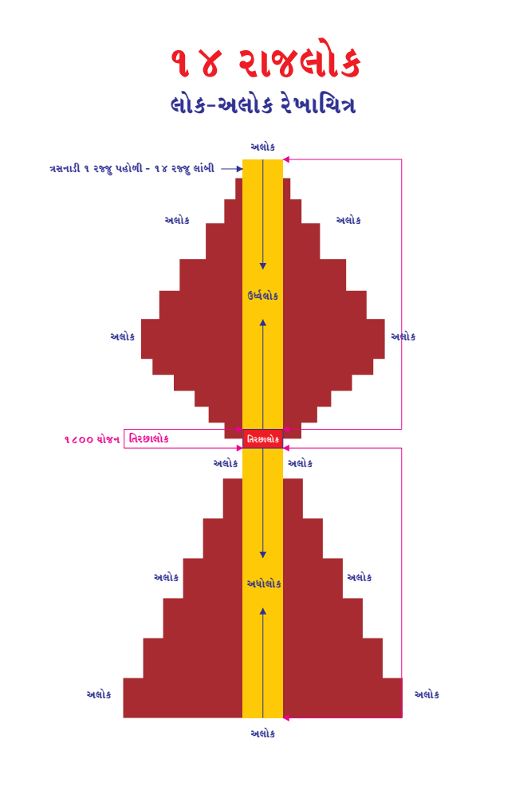
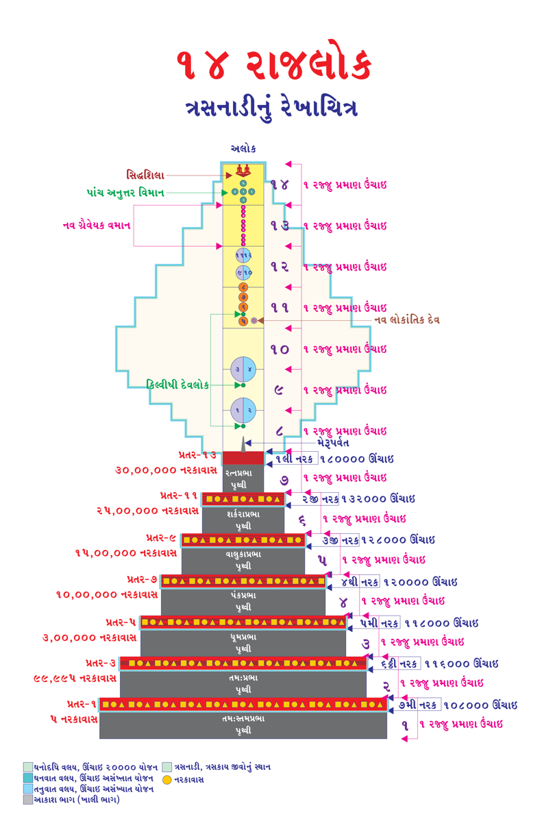

This book Unicode and EPUB Converted by Parth Shah (myself) free of charge as Gyaanseva. You can contact on caparthdshah@gmail.com for further details. You may quote reference "Jain Website"
દેવલોક - 230: જ્યોતિષ્ક દેવલોક-70:
તેમાં પાંચ વર્ણના સરસ અને સુગંધિત પુષ્પપુંજોથી (ફૂલો કળીઓ સાથે) ગોઠવેલા હોય, ઉત્તમ કાલાગરુ (કાળો અગર), કુન્દરુક અને તુરુષ્કના ધૂપથી તે શયનગૃહ ચારે બાજુ સુગંધથી મઘમઘાયમાન, એક પ્રકારની સુગંધગુટિકા જેવું થઇ ગયું હોય, તેવા શયનગૃહમાં બંને બાજુ તકિયાથી યુક્ત, બંને તરફ ઉન્નત (ઊપસેલી, ઉંચે ઉઠેલું) અને મધ્યમાં કંઇક ઝૂકેલી, ગંગાનદીના તટવર્તી (કિનારે) રેતીના ઉદ્દાલ સમાન-પગ રાખતાં જ લપસી જવાય તેવી અત્યંત કોમળ શ્રેષ્ઠ એક સાલિંગનવર્તિક (શરીર પ્રમાણ શય્યા) હોય. તે શય્યા પરિકર્મિત ઝૂલવાળી રેશમી ચાદરથી આચ્છાદિત (પાથરેલી) તથા સુંદર, સુરચિત રજસ્ત્રાણથી યુક્ત હોય, લાલ રંગના સૂક્ષ્મ વસ્ત્રની મચ્છરદાની તેના પર લાગેલી હોય, તે સુરમ્ય, કોમળ ચર્મ, વસ્ત્ર, રૂ, બરૂ, નવનીત તથા આકોલિયાના રૂની સમાન કોમળ સ્પર્શવાળી, સુગંધિત શ્રેષ્ઠ પુષ્પથી, ચૂર્ણથી તથા શય્યાને ઉપયોગી અનેક દ્રવ્યોથી યુક્ત હોય. તેવી શય્યા ઉપર તે પુરૂષ શ્રેષ્ઠ શ્રૃંગાર ગૃહ સમાન સુંદર વેષવાળી, હાસ્ય-વિનોદ કરનારી, પતિ સાથે બેસીને વિલાસયુક્ત વાર્તાલાપ કરનારી, નિપુણ, કામકલામાં કુશળ, પતિમાં અનુરક્ત, અવિરક્ત, મનને અનુકૂળ શ્રેષ્ઠ સ્ત્રી સાથે મનને અન્યત્ર કર્યા વિના એકાંતમાં રતિરક્ત થઇને ઇષ્ટ શબ્દ, સ્પર્શ, રસ, ગંધ આદિ પાંચ પ્રકારના મનુષ્ય સંબંધી કામભોગોનું સેવન કરે છે.
38
Page 668
જૈન વિજ્ઞાન
દેવલોક - 231: જ્યોતિષ્ક દેવલોક-71:
દેવી-દેવતાઓના કામભોગોની વિશિષ્ટતાઃ
વેદોપશમન (વિકાર શાંત)ના સમયે તે પુરૂષ ઉદાર સુખનો અનુભવ કરે છે. તે પુરૂષના કામભોગોથી વાણવ્યંતર દેવોના કામભોગ અનંતગુણા વિશિષ્ટ હોય છે. વાણવ્યંતર દેવોના કામભોગોથી અસુરેન્દ્ર સિવાયના ભવનવાસી (નવનિકાયના એટલે કે, ભવનપતિ દેવલોકના અસુર દેવોને છોડી, નાગકુમાર દેવોથી સ્તનિતકુમાર દેવો સુધી) દેવોના કામભોગ અનંતગુણા વિશિષ્ટ હોય છે. અસુરેન્દ્ર સિવાયના ભવનવાસી દેવોના કામભોગથી અસુરેન્દ્રના કામભોગ અનંતગુણા વિશિષ્ટ હોય છે. અસુરેન્દ્ર દેવોના કામભોગોથી જ્યોતિષ્ક દેવલોકના ગ્રહો, નક્ષત્રો, તારાઓના કામભોગ અનંતગુણા વિશિષ્ટ છે. ગ્રહગણ, નક્ષત્ર, તારાઓના કામભોગ કરતાં ચંદ્ર-સૂર્યના કામભોગ અનંત ગુણા વિશિષ્ટ હોય છે. જ્યોતિષકેન્દ્ર જ્યોતિષરાજ ચંદ્રદેવ-સૂર્યદેવ આ પ્રકારના કામભોગોનો અનુભવ કરતાં વિચરે છે.
અવિનીત દેવની દશાઃ
જે જ્યોતિષ્ક દેવ અવિનીત હોય છે તે દેવગતિમાં પણ ચાકરપણું (નોકરપણું,
દાસપણું) પામીને દુઃખ ભોગવતાં દેખાય છે.
વિનીત દેવોની દશાઃ
જે જ્યોતિષ્ક દેવ સુવિનીત હોય છે તે દેવ મહાયશસ્વી તથા મહાૠદ્ધિમાન
થઇને સુખ ભોગવતાં દેખાય છે.
39
Page 669
જૈનમ્ જયતિ શાસનમ્
દેવલોક - 232: જ્યોતિષ્ક દેવલોક-72:
સંક્ષિપ્ત સારાંશઃ
જે દેવોના વિમાન પ્રકાશયુક્ત છે અને આ તિરછા લોકમાં પ્રકાશ કરે છે; તેમાં ઉત્પન્ન થતા અને રહેનારા દેવોને જ્યોતિષી દેવ કહેવાય છે. તે દેવો પોતાના વિમાન અને સ્વભાવની અપેક્ષાએ બે પ્રકારના છેઃ
-1
ચર એટલે ગતિશીલ
(ર) અચર એટલે ગતિ વગરના, સ્થિર.
અઢીદ્વીપની અંદરના જ્યોતિષી દેવોના વિમાન ચર છે અને અઢીદ્વીપની બહાર જ્યોતિષી દેવો સ્થિર છે. અઢીદ્વીપમાં જ્યોતિષી વિમાન અને જ્યોતિષી દેવ સંખ્યાત છે તથા અઢીદ્વીપ બહાર અસંખ્ય દ્વીપ અને અસંખ્ય સમુદ્રોમાં જ્યોતિષ્ક વિમાન અને જ્યોતિષ્ક દેવ અસંખ્યાત છે.
જંબૂદ્વીપમાં 2-ચંદ્ર, 2-સૂર્ય, 56-નક્ષત્ર, 176-ગ્રહ અને 1,33,950 ક્રોડાક્રોડી (1,33,95,00,00,00,00,00,00,000) તારા છે. આ બે ચંદ્ર અને બે સૂર્યનો પરિવાર છે. આજ પ્રમાણે લવણસમુદ્રમાં 4 ચંદ્ર અને 4 સૂર્યનો પરિવાર છે, ધાતકીખંડ દ્વીપમાં 12 ચંદ્ર અને 12 સૂર્યનો પરિવાર છે, કાલોદધિ સમુદ્રમાં 42 ચંદ્ર અને 42 સૂર્યનો પરિવાર છે અને અર્ધપુષ્કર દ્વીપમાં 72 ચંદ્ર અને 72 સૂર્યનો પરિવાર છે. આ રીતે અઢીદ્વીપમાં બધા મળીને 132 ચંદ્ર અને 132 સૂર્ય પોતાના પરિવાર સહિત ગતિ કરી રહ્યા છે.
40
Page 670
જૈન વિજ્ઞાન
દેવલોક - 233: જ્યોતિષ્ક દેવલોક-73:
1 ચંદ્ર-સૂર્યના પરિવારમાં 28-નક્ષત્ર, 88-ગ્રહ અને 66,975 ક્રોડા- ક્રોડી તારા છે. આ બધા જ્યોતિષી વિમાનો મેરૂપર્વતની પ્રદક્ષિણા કરતા ફરે છે. ચંદ્રથી સૂર્ય, સૂર્યથી ગ્રહ, ગ્રહથી નક્ષત્ર અને નક્ષત્રથી તારા વધુ ગતિવાળા હોય છે અને તેમની ૠદ્ધિની અપેક્ષાએ ચંદ્રથી સૂર્ય, સૂર્યથી ગ્રહ, ગ્રહથી નક્ષત્ર અને નક્ષત્રથી તારા ઓછી ૠદ્ધિવાળા હોય છે.
તિરછાલોક (મધ્યલોક)માં રત્નપ્રભા પૃથ્વીના સમભૂમિ ભાગથી 790 યોજન ઉપર અને 900 યોજનની નીચે એટલે કે 110 યોજન ક્ષેત્રમાં જ્યોતિષી દેવોના વિમાનો આવેલા છે. તેમાં મુખ્ય રીતે સમભૂમિથી 800 યોજન ઉપર સૂર્યનું વિમાન છે, સમભૂમિથી 880 યોજન ઉપર ચંદ્રનું વિમાન છે. ગ્રહ-નક્ષત્ર અને તારાના વિમાનો ઉપરોક્ત 110 યોજનમાં સર્વત્ર ફેલાયેલા છે.
ચર (ગતિશીલ) જ્યોતિષી દેવોની ગતિના કારણે કાળના વિભાગ થાય છે : દિવસ, રાત, કલાક, મિનિટ, સેકન્ડ તેમજ માસ, વર્ષ વગેરે થાય છે અને તેનાથી જ આયુષ્યનું પ્રમાણ માપવામાં આવે છે. અઢીદ્વીપનું આખું જ્યોતિષ મંડલ મેરૂપર્વતની પ્રદક્ષિણા કરે છે.
જ્યોતિષી દેવોમાં ત્રાયસ્ત્રિંશક દેવો અને લોકપાલ દેવો આ બે પ્રકારના દેવો હોતા નથી.
જ્યોતિષી દેવોમાં ઉત્કૃષ્ટ (વધુમાં વધુ) આયુષ્ય ચંદ્રદેવનું હોય છે અને જઘન્ય (ઓછામાં ઓછું) આયુષ્ય તારાદેવનું હોય છે.
41
Page 671
જૈનમ્ જયતિ શાસનમ્
દેવલોક - 234: જ્યોતિષ્ક દેવલોક-74:
જ્યોતિષીદેવોના અસંખ્યાત લાખ વિમાનાવાસ અડધા કોઠાના આકારના, સર્વસ્ફટિકમય, ચારે તરફ નીકળતી, ચારે તરફ પ્રસરી શ્વેત પ્રભાથી, વિવિધ પ્રકારના મણિ, કનક અને રત્ન જડિત હોવાથી અદ્ભુત દેખાય છે; હવાથી ઊડતી વિજય સૂચક વૈજયંતી નામે પતાકા અને છત્ર પર છત્ર (અતિછત્ર)થી યુક્ત, અત્યંત ઊંચા ગગનચુંબી શિખરોવાળા છે. તેની જાળીઓની વચ્ચે જડેલા રત્નો જાણે પાંજરામાંથી બહાર કાઢેલા હોય તેવા, મણિ અને સુવર્ણની સ્તૂપિકા (શિખરો)થી યુક્ત, વિકસિત (ખીલેલાં) શતપત્રો (સો પાંખડીવાળા કમળો), પુંડરીકો (હજાર પાંખડીઓવાળા કમળો), તિલકો અને રત્નમય અર્ધચન્દ્રોથી ચિત્રિત, અનેક પ્રકારની મણિમય માળાઓથી સુશોભિત, અંદર અને બહારથી કોમળ, તેના ભૂમિભાગ તપ્ત સુવર્ણની મનોહર વાલુકામય (રેતી યુક્ત), સુખદ સ્પર્શયુક્ત, શોભાસંપન્ન, સુરૂપ, પ્રસન્નતા જનક, દર્શનીય, અભિરૂપ (અતિરમણીય) અને પ્રતિરૂપ (મનોહર છે). આ વિમાનાવાસોમાં પર્યાપ્ત અને અપર્યાપ્ત જ્યોતિષીદેવોનાં સ્થાનો છે. તે સ્થાન ત્રણેય અપેક્ષાએ લોકના અસંખ્યાતમા ભાગમાં છે. ત્યાં ઘણા જ્યોતિષીદેવો નિવાસ કરે છે.
બૃહસ્પતિ (ગુરુ), ચંદ્ર, સૂર્ય, શુક્ર, શનૈશ્ચર (શનિ), રાહુ, ધૂમકેતુ (કેતુ),
બુધ અને અંગારક (મંગળ). તે તપાવેલા સુવર્ણ સમાન વર્ણ (લાલ રંગ) યુક્ત છે.
42
Page 672
જૈન વિજ્ઞાન
દેવલોક - 235: જ્યોતિષ્ક દેવલોક-75:
જે ગ્રહો જ્યોતિષ્ક ક્ષેત્રમાં ગતિ કરે છે તથા ગતિમાં પ્રીતિવાળા છે, તે કેતુ આદિ તથા 28 પ્રકારના નક્ષત્ર દેવગણો અનેક પ્રકારની આકૃતિવાળા છે. તારાઓ પાંચ વર્ણના છે અને તેઓ બધા અવસ્થિત લેશ્યાવાળા છે, તે ગતિશીલ, અવિશ્રાન્ત (નિરંતર) મંડલાકારે ગતિ કરનારા છે. તે દેવોના મુકુટમાં પોતપોતાના નામ પ્રમાણે ચિહ્ન પ્રગટરૂપે હોય છે. તેઓ મહર્દ્ધિક (મહા ઋદ્ધિવાન) હોય છે વગેરે સર્વ વર્ણન અગાઉ પ્રમાણે જાણવું તેમજ તે દેવો દશે દિશાઓને પ્રકાશિત, પ્રભાસિત કરતાં વિચરે છે. તે જ્યોતિષી દેવો જ્યોતિષી વિમાનાવાસોમાં પોતપોતાના લાખો વિમાનાવાસોનું, પોતપોતાના સામાનિક દેવોનું, સપરિવાર અગ્રમહિષીઓનું, પરિષદોનું, સેનાઓનું, સેનાધિપતિ દેવોનું, આત્મરક્ષક દેવોનું તથા અન્ય ઘણા જ્યોતિષી દેવો અને દેવીઓનું આધિપત્ય, અગ્રેસરત્વ કરતાં વિચરણ કરે છે.
જ્યોતિષ્ક દેવલોક વિશે આપે જાણ્યું. ભવનપતિ દેવલોક, વ્યંતર-વાણવ્યંતર દેવલોક અને જ્યોતિષ્ક દેવલોકમાં રહેલાં સ્પષ્ટ તફાવત પણ આપ સમજી શક્યા હશો. દરેક સુખ અને જીવની ગતિ કર્મવશ હોય છે. દરેક અવસ્થા ભગવાન નિર્માણ નથી કરતાં. જીવ પોતાના કર્મવશ તમામ પરિસ્થિતિને નિર્માણ કરે છે. પોતે પોતાના સુખ અને દુઃખનો ભોક્તા હોય છે. હવે વૈમાનિક દેવલોક વિશે સમજીએ...
43
Page 673
જૈનમ્ જયતિ શાસનમ્
દેવલોક - 236: વૈમાનિક દેવલોક-1:
દરેક જીવ સુખની ઇચ્છા રાખે છે. કોઇપણ જીવને દુઃખ નથી ગમતું. જે આ વ્યાખ્યાને સારી રીતે સમજે અને તેને અનુસરે તો તેની ભાવના પ્રમાણે તે નિશ્ચિત પણે આગળ વધી શકે છે. આપ માનો કે ન માનો એક સિદ્ધાંત છે કે, આપ જેવું ઇચ્છો છો તેવું પ્રથમ આપે આપવું જ પડે છે.
ઉદહરણમાં જો આપ ઇચ્છો છો કે કોઇ વ્યક્તિ આપને માન-સન્માનથી આવકારે, તો પ્રથમ શરુઆત આપે જ કરવાની હોય છે કે આપ તેને આદર-સત્કાર સાથે માન-સન્માન આપો. અચૂક તે વ્યક્તિ આપની સાથે તેવો અથવા સવાયો વ્યવહાર જરૂરથી કરે છે. આપ જે લૌકિક વ્યવહાર કરો છો તેમાં પણ વ્યવહાર આ પ્રમાણે જ થાય છે. આવો વ્યવહાર યુગોથી છે. આ જ વિજ્ઞાન છે જે આપને સમજવું રહ્યું.
આ કર્મની સત્તા છે તેમાંથી તીર્થંકર પરમાત્મા પણ બાકાત નથી. જૈન દર્શન કર્મની સત્તાને પ્રાધાન્ય આપે છે. ઇશ્વરવાદને નથી માનતું. ઇશ્વરવાદીઓ બ્રહ્મા, વિષ્ણુ અને મહેશને પ્રાધાન્ય આપી બ્રહ્મા સૃષ્ટિનું સર્જન કરે છે, વિષ્ણુ સૃષ્ટિનું પાલન કરે છે અને મહેશ (શીવ-શંકર) સૃષ્ટિનું સંહાર (વિસર્જન) કરે છે, જે હાસ્યાસ્પદ છે! એટલે સીધો અર્થ એ થાય છે કે જીવ જીવે છે અને મરે છે તે ઇશ્વરની કૃપા ઉપર નિર્ભર છે. જે થઇ રહ્યું છે તે ઇશ્વરની ઇચ્છાથી થઇ રહ્યું છે. એક વ્યક્તિ કોઇની હિંસા કરે છે તે પણ ઇશ્વરની ઇચ્છાથી જ થાય છે. એક વ્યક્તિ બીજી વ્યક્તિ સાથે વેર-દુશ્મની કરે છે તે પણ ઇશ્વરની ઇચ્છાથી થાય છે.
44
Page 674
જૈન વિજ્ઞાન
દેવલોક - 237: વૈમાનિક દેવલોક-2:
કોઇ જીવનું પતન કરવું અને કોઇ જીવનો ઉદ્ધાર કરવો તે પણ ઇશ્વરની ઇચ્છા ઉપર નિર્ભર રહે છે. કોઇ જીવ અતિ ધનાઢય છે અને કોઇક જીવ અતિ ગરીબ છે જે ભીક્ષા માંગી પોતાના એક સમયનું ભોજન પણ માંડ-માંડ ભેગું કરી શકે છે તે પણ ઇશ્વરની કૃપાથી જ, એવો ભેદ થાય છે. બકરા, કૂકડા, માછલીઓ વગેરે અસંખ્યાત પ્રમાણે મારવામાં આવે છે તેમાં પણ ઇશ્વરની જ ઇચ્છા સમાયેલી છે. એટલે આપણે આવા કર્મની કઠપૂતળીઓ છીએ, આપણી ઇચ્છાથી કોઇ પણ કાર્ય થતું નથી. બીજા અર્થમાં કહીએ તો પાપ કરનાર પણ પોતે નિર્દોષ છે એવું સ્પષ્ટ સાબિત થાય છે.
જૈન દર્શન આ બધી બાબતોનું ખંડન કરે છે. કર્મ સંસારનું કારણ છે અને કર્મનિર્જરા મોક્ષનું કારણ છે. અશુભ કર્મ તિર્યંચ ગતિ અને નરક ગતિનું કારણ છે જ્યારે શુભ કર્મ મનુષ્ય ગતિ અને દેવ ગતિનું કારણ છે. કર્મ ઉદયમાં આવે છે અને તેને અચૂક ભોગવાય છે. કહેવાય છે કે, હસતાં કર્મ ન બાંધીએ રોતા ન છૂટે! એક માત્ર જૈન દર્શન જ કર્મની સત્તાને જાણે છે, તેના પરિણામને જાણે છે.
મને અને આપ સર્વેને મહાન પૂણ્યોદયે દૂર્લભ મનુષ્ય જન્મની પ્રાપ્તિ થઇ. તેમાં પણ કર્મ ભૂમિએ જન્મ થયો, તેમાં પણ આર્ય ક્ષેત્રમાં જન્મ થયો, તેમાં પણ જૈન પરિવારમાં જન્મ થયો અને પરમ તારક પરમાત્મા જિનેશ્વર દેવનું આલંબન મળ્યું. મહાન સુદેવ-સુગુરુ-સુધર્મની પ્રાપ્તિ થઇ. જે આપણને જરુરથી તારશે! હવે દેવના ચાર પ્રકારમાંથી અંતિમ પ્રકાર વૈમાનિક દેવો વિશે વિસ્તૃત માહિતી મેળવીએ.
45
Page 675
14 રાજલોક લોક-અલોક રેખાચિત્ર
Page 676
14 રાજલોક ત્રસનાડીનું રેખાચિત્ર

Page 677
જૈનમ્ જયતિ શાસનમ્
દેવલોક - 238: વૈમાનિક દેવલોક-3:
જે દેવોનું રહેવાસ સ્થાન વિમાનમાં હોય તેવા દેવી-દેવતાઓને વૈમાનિક દેવો કહેવાય. જે દેવો ઊર્ધ્વલોક 14 રાજલોકના ત્રણ વિભાગ થાય છે. ચિત્ર પરથી સમજી શકાય છે. તિરછાલોક (મધ્યલોક)ના ઉપરના વિભાગઝના વિમાનમાં રહે છે તેને વૈમાનિક દેવો કહે છે. તેના મુખ્ય બે પ્રકાર હોય છે 1) કલ્પોપન્નક અને 2) કલ્પાતીત.
જ્યાં કલ્પ (આચાર) મર્યાદા અથવા સ્વામી-સેવકનો ભેદ હોય, ઇન્દ્ર, સામાનિક, ત્રાયસ્ત્રિંશક આદિ દશ પ્રકારના દેવોની જાતિનો વ્યવહાર હોય તેને કલ્પોપન્નક દેવ કહે છે. તેના સૌધર્મ દેવલોક વગેરે બાર દેવલોકના બાર પ્રકાર છે.
જ્યાં સ્વામી-સેવકનો ભેદ ન હોય, ઇન્દ્ર વગેરે દશ પ્રકારના દેવોની જાતિનો વ્યવહાર જ્યાં ન હોય તેને કલ્પાતીત કહે છે. તેના બે ભેદ છેઃ 1) નવગ્રૈવેયક વિમાનવાસી દેવ અને 2) પાંચ અનુત્તરોપપાતિક દેવ.
લોક પુરુષની ગ્રીવા (ડોક)ના સ્થાને સ્થિત થયેલા વિમાનોને ગ્રૈવેયક વિમાન કહે છે. તે નવ વિમાન ત્રણ-ત્રણની ત્રણ ત્રિક (ત્રણ-ત્રણની ત્રિપુટી)માં ગોઠવાયેલા છે. તેમાં જન્મ ધારણ કરનારા દેવો ગ્રૈવેયક વિમાનવાસી દેવો કહેવાય છે.
અનુત્તરનો અર્થ છેઃ સર્વોચ્ચ અને સર્વશ્રેષ્ઠ વિમાન. તે અનુત્તર વિમાનોમાં ઉપપાત એટલે કે જન્મ ધારણ કરનાર દેવ અનુત્તરોપપાતિક કહેવાય છે.
48
Page 678
જૈન વિજ્ઞાન
દેવલોક - 239: વૈમાનિક દેવલોક-4:
સૌધર્મથી અચ્યુત સુધીના દેવો ક્રમશઃ (1) મૃગ (હરણ) (ર) મહિષ (પાડો) (3) વરાહ (સૂવર) (4) સિંહ (પ) બકરો (6) દેડકો (7) અશ્વ (ઘોડો) (8) ગજરાજ (હાથી) (9) ભુજંગ (સાપ) (10) ગેંડો (11) વૃષભ (બળદ) (12) વિડિમ (હરણની એક પ્રજાતિ વિશેષરૂપ ચિહ્નોથી યુક્ત મુકુટવાળા હોય છે.
શિથિલ અને શ્રેષ્ઠ મુકુટના ધારક, શ્રેષ્ઠ કુંડળોથી પ્રકાશિત ચહેરાવાળા, મુકુટના કારણે શોભાયુક્ત, રકત (લાલ) આભાયુકત, કમળપત્ર સમાન ગોરા, શ્વેત, શુભ વર્ણ, ગંધ, રસ, સ્પર્શવાળા, ઉત્તમ વૈક્રિયશક્તિના ધારક, શ્રેષ્ઠ વસ્ત્ર, ગંધ, માળા અને વિલેપનને ધારણ કરનાર, મહર્દ્ધિક (મહા ઋદ્ધિવાન), મહાદ્યુતિમાન, મહાયશસ્વી, મહાબલી, મહાનુભાગ, મહાસુખી, હારથી સુશોભિત વક્ષઃસ્થળ (છાતી)વાળા છે. કડા અને બાજુબંધના કારણે સ્તંભિત ભુજાવાળા તથા કપોલ (ગાલ) સ્થલને સ્પર્શ કરતાં અંગદ, કુંડળ કર્ણપીઠમાં ધારણ કરનારા, હાથોમાં વિવિધ આભૂષણોના ધારક અને મસ્તક પર વિસ્મયકારી પુષ્પમાળાઓથી શોભાયમાન છે.
તેઓ કલ્યાણકારી ઉત્તમ વસ્ત્રો તથા કલ્યાણકારી શ્રેષ્ઠ માળા અને વિલેપન ધારણ કરે છે. તેઓનું શરીર તેજથી દેદીપ્યમાન હોય છે. લાંબી વનમાળાના ધારક, દિવ્યવર્ણ, દિવ્યગંધ, દિવ્યરસ, દિવ્યસ્પર્શ, દિવ્યસંહનન, દિવ્યસંસ્થાન, દિવ્યૠદ્ધિ, દિવ્યદ્યુતિ, દિવ્યપ્રભા, દિવ્યછાયા, દિવ્યઅર્ચિ (જ્યોતિ), દિવ્ય તેજથી, દિવ્ય લેશ્યાથી દશે દિશાઓને ઉદ્યોતિત (પ્રકાશિત) અને પ્રભાસિત કરે છે.
49
Page 679
જૈનમ્ જયતિ શાસનમ્
દેવલોક - 240: વૈમાનિક દેવલોક-5:
પોત-પોતાના લાખો વિમાનાવાસોનું, હજારો સામાનિક દેવોનું, ત્રાયસ્ત્રિંશક દેવોનું, લોકપાલ દેવોનું, સપરિવાર અગ્રમહિષીઓનું, પરિષદોનું, સેનાઓનું, સેનાધિપતિ દેવોનું, હજારો આત્મરક્ષક દેવોનું (દરકે પદવીધરોની જાણકારી જૈન વિજ્ઞાનના લેખમાં વિસ્તારમાં અગાઉ જણાવેલ છે.) તથા અન્ય ઘણાં વૈમાનિક દેવો તથા દેવીઓનું આધિપત્ય, અગ્રેસરપણું, સ્વામિત્વ, ભર્તૃત્વ, મહત્તરકત્વ, આજ્ઞેશ્વરત્વ તથા સેનાપતિત્વ કરતાં-કરાવતાં અને પાલન કરતાં-કરાવતાં મહાન નાટ્ય, ગીત તથા કુશળ વાદકો દ્વારા વગાડાતાં વીણા, તલ, તાલ, ત્રુટિત, ઘનમૃદંગ આદિ વાદ્યોના ધ્વનિની સાથે દિવ્ય શબ્દ વગેરે કામભોગોને નિરંતર ભોગવતાં વિચરણ કરે છે.
પર્યાપ્ત (પાંચ ઇન્દ્રિયોની પર્યાપ્તિ સાથે સંપૂર્ણ શરીરની રચના થયેલ હોય તે) અને અપર્યાપ્ત (દેવનો દેવપણે જન્મનો કાળ અંતમુહૂર્ત સમય, જ્યારે દેવોના શરીરની રચના થતી હોય તે અવસ્થાવાળા દેવ, જેમ કે મનુષ્ય જીવ માંના ગર્ભમાં હોય ત્યારે તેની સંપૂર્ણ રચના 9 મહિના દરમ્યાન થતી હોય છે) સૌધર્મ કલ્પગત દેવોનાં સ્થાન જંબૂદ્વીપ નામના દ્વીપના સુમેરુ પર્વતની દક્ષિણ દિશામાં, આ રત્નપ્રભા પૃથ્વીના અત્યંત સમ અને રમણીય ભૂમિભાગથી ઉપર ચંદ્ર, સૂર્ય, ગ્રહ, નક્ષત્ર તથા તારારૂપ જ્યોતિષી વિમાનોથી અનેક સો યોજન, અનેક હજાર યોજન, અનેક લાખો યોજન, ઘણાં કરોડો યોજન અને ઘણા ક્રોડાક્રોડી યોજન ઉપર સૌધર્મ નામક કલ્પ (દેવલોક) આવે છે.
તે પૂર્વ-પશ્ચિમ લાંબું, ઉત્તર-દક્ષિણ પહોળું અર્ધચન્દ્રાકારે સંસ્થિત (ગોઠવાયેલું), અર્ચિઓ (જ્યોતિર્મયી) માળાઓ તથા દીપ્તિના પુંજ સમાન કાન્તિવાળું છે. તેની લંબાઇ તથા પહોળાઇ અસંખ્યાત કોટિ (કરોડ) યોજનની જ નહીં પરંતું, અસંખ્યાત કોટાકોટિ (ક્રોડાક્રોડી) યોજનની છે. તેની પરિધિ (ઘેરાવો) પણ અસંખ્યાત કોટાકોટિ યોજનની છે.
50
Page 680
જૈન વિજ્ઞાન
દેવલોક - 241: વૈમાનિક દેવલોક-6:
તે વિમાનો સર્વરત્નમય સ્વચ્છ તેમજ પ્રતિરૂપ (આબેહૂબ) છે. તે સૌધર્મ કલ્પમાં સૌધર્મ દેવોના બત્રીશ લાખ વિમાનાવાસો કહ્યા છે. તે વિમાનો પૂર્ણરૂપે રત્નમય સ્વચ્છ તેમજ પ્રતિરૂપ છે. તે વિમાનોના બહુસમ મધ્યભાગમાં પાંચ અવતંસક (શ્રેષ્ઠ મહેલો) છે, તે આ પ્રમાણે છેઃ
(1) અશોકાવતંસક, (ર) સપ્તપર્ણાવતંસક (3) ચંપકાવતંસક (4) ચૂતાવતંસક અને આ ચારેયની મધ્યમાં (પ) સૌધર્માવતંસક.
આ અવતંસકો પૂર્ણતઃ રત્નમય, સ્વચ્છ તેમજ પ્રતિરૂપ છે. આ અવતંસકોમાં પર્યાપ્ત અને અપર્યાપ્ત સૌધર્મ દેવોના સ્થાન છે. તે દેવો ત્રણે અપેક્ષાથી લોકના અસંખ્યાતમા ભાગમાં છે. તે વિમાનોમાં ઘણા સૌધર્મ દેવલોકના દેવો નિવાસ કરે છે. તે મહર્દ્ધિક છે તેમજ દશે દિશાઓને પ્રભાસિત (પ્રકાશિત) કરતાં રહે છે.
તે દેવો પોત-પોતાના લાખો વિમાનોનું, હજારો સામાનિક દેવોનું તેમજ હજારો આત્મરક્ષક દેવોનું તથા અન્ય ઘણા સૌધર્મ કલ્પવાસી વૈમાનિક દેવો અને દેવીઓનું આધિપત્ય, અગ્રેસરપણું કરતાં તેમજ ભોગ ભોગવતાં વિચરે છે. આ પ્રમાણેનું વર્ણન સમગ્ર વૈમાનિક દેવોના વર્ણન પ્રમાણે સમજવું.
આ સ્થાનોમાં દેવેન્દ્ર દેવરાજ શક્ર નિવાસ કરે છે; તે વજ્રપાણિ, પુરન્દર, શતક્રતુ, સહસ્ત્રાક્ષ, મઘવા, પાકશાસન, દક્ષિણાર્દ્ધલોકાધિપતિ (આ બધા નામ શક્રેન્દ્રના વિશેષ નામો છે) બત્રીસ લાખ વિમાનોના અધિપતિ છે. તેનું વાહન ઐરાવત હાથી છે.
51
Page 681
જૈનમ્ જયતિ શાસનમ્
દેવલોક - 242: વૈમાનિક દેવલોક-7:
તે સુરેન્દ્ર રજરહિત આકાશ જેવા સ્વચ્છ વસ્ત્રના ધારક, સંસકત માળા અને મુકુટના ધારક; નવા, સુવર્ણમય, સુંદર, અદ્ભુત, ચંચળ કુંડળો જેના કપોલ (ગાલ)ભાગને સ્પર્શી રહ્યા છે, તેવા તે શક્રેન્દ્ર મહર્દ્ધિક તેમજ દશે દિશાને સુશોભિત કરતાં વિચરે છે.
ત્યાં દેવેન્દ્ર દેવરાજ શક્ર 32,00,000 (બત્રીશ લાખ) વિમાનાવાસોનું, 84,000 (ચોર્યાશી હજાર) સામાનિક દેવોનું, 33 (તેત્રીસ) ત્રાયસ્ત્રિંશક દેવોનું, 4 (ચાર) લોકપાલ દેવોનું, સપરિવાર 8 (આઠ) અગ્રમહિષીઓનું, 3 (ત્રણ) પરિષદોનું, 7 (સાત) સેનાઓનું, 7 (સાત) સેનાધિપતિ દેવોનું, 4 x 84,000 (ચાર ચોર્યાશી હજાર) એટલે કે 3,36,000 (ત્રણ લાખ છત્રીશ હજાર) આત્મરક્ષક દેવોનું તથા અન્ય ઘણા સૌધર્મ કલ્પવાસી વૈમાનિક દેવો અને દેવીઓનું આધિપત્ય અને અગ્રેસરપણું કરતાં વિચરણ કરે છે.
પર્યાપ્ત અને અપર્યાપ્ત ઇશાન દેવલોક ના દેવોના સ્થાન જંબૂદ્વીપ નામક દ્વીપના સુમેરુ પર્વતની ઉત્તર દિશામાં, આ રત્નપ્રભા પૃથ્વીના અત્યધિક સમ અને રમણીય ભૂમિભાગથી ઉપર ચંદ્ર, સૂર્ય, ગ્રહ, નક્ષત્ર, અને તારારૂપ જ્યોતિષી દેવોના વિમાનથી અનેક સો યોજન, અનેક હજારો યોજન, અનેક લાખો યોજન, ઘણાં કરોડો યોજન, ઘણાં ક્રોડાક્રોડી યોજન ઉપર ઇશાન નામનું કલ્પ (દેવલોક) આવે છે, તે પૂર્વ-પશ્ચિમમાં લાંબુ તથા ઉત્તર-દક્ષિણ પહોળું છે તેમજ તે સુંદર અને મનોહર વગેરે વર્ણન સૌધર્મકલ્પ પ્રમાણે જાણવું.
52
Page 682
જૈન વિજ્ઞાન
દેવલોક - 243: વૈમાનિક દેવલોક-8:
તે ઇશાન કલ્પમાં ઇશાન દેવોના 28,00,000 (અઠયાવીસ લાખ) વિમાનાવાસો છે. તે વિમાનો સર્વ રત્નમય તેમજ પ્રતિરૂપ છે. તે વિમાનાવાસોના બરાબર મધ્યભાગમાં પાંચ અવતંસક (શ્રેષ્ઠ મહેલ) છે, તે આ પ્રમાણે છેઃ (1) અંકાવતંસક, (ર) સ્ફટિકાવતંસક, (3) રત્નાવતંસક, (4) જાતરૂપાવતંસક અને તે ચારેયની મધ્યમાં (પ) ઇશાનાવતંસક છે. તે અવતંસકો પૂર્ણતયા રત્નમય તેમજ પ્રતિરૂપ (આબેહૂબ) છે. આ અવતંસકોમાં પર્યાપ્તા અને અપર્યાપ્તા ઇશાન દેવોના સ્થાન છે. તે સ્થાન ત્રણેય અપેક્ષાથી લોકના અસંખ્યાતમા ભાગમાં છે. બાકીનું બધું જ વર્ણન સૌધર્મ દેવલોકના દેવો પ્રમાણે જાણવું તેમજ તે દેવો દિવ્ય ભોગ ભોગવતાં વિચરણ કરે છે.
ઇશાન કલ્પમાં દેવેન્દ્ર દેવરાજ ઇશાનેન્દ્ર નિવાસ કરે છે, તે શૂલપાણિ, વૃષભવાહન, ઉત્તરાર્દ્ધલોકાધિપતિ (ઇશાનેન્દ્રના ઉપનામ કહેવાય છે) 28,00,000 (અઠયાવીશ લાખ) વિમાનાવાસોના અધિપતિ, રજરહિત આકાશ સમાન સ્વચ્છ વસ્ત્રોના ધારક છે તેમજ દશે (પૂર્વ, પશ્ચિમ, ઉત્તર, દક્ષિણ, ઇશાન, અગ્નિ, વાયવ્ય, નૈઋત્ય, અધો અને ઉર્ધ્વ આ દશ દિશા કહેવાય) દિશાઓને પ્રતિભાસિત કરતાં વિચરે છે વગેરે વર્ણન શક્રેન્દ્ર (સૌધર્મેન્દ્ર) ની સમાન જાણવું.
53
Page 683
જૈનમ્ જયતિ શાસનમ્
દેવલોક - 244: વૈમાનિક દેવલોક-9:
તે ઇશાનેન્દ્ર 28,00,000 (અઠયાવીશ લાખ) વિમાનાવાસોનું, 80,000 (એંશી હજાર) સામાનિક દેવોનું, 33 (તેત્રીશ) ત્રાયસ્ત્રિંશક દેવોનું, 4 (ચાર) લોકપાલ દેવોનું, 8 (આઠ) સપરિવાર અગ્રમહિષીઓનું, 3 (ત્રણ) પરિષદોનું, 7 (સાત) સેનાઓનું, 7 (સાત) સેનાધિપતિ દેવોનું, (4 x 80,000)ચાર એંશી હજાર એટલે કે 3,20,000 (ત્રણ લાખ, વીશ હજાર) આત્મરક્ષક દેવોનું તથા અન્ય ઘણા ઇશાન કલ્પવાસી દેવો તથા દેવીઓનું આધિપત્ય, અગ્રેસરત્વ કરતા વિચરણ કરે છે.
પર્યાપ્ત અને અપર્યાપ્ત સનત્કુમાર દેવોનાં સ્થાન સૌધર્મકલ્પની ઉપર સમાન દિશા અને સમાન વિદિશામાં એટલે કે બરાબર ઉપર અનેક યોજન, અનેક સો યોજન, અનેક હજાર યોજન, અનેક લાખો યોજન, અનેક ક્રોડ (કરોડ) યોજન અને અનેક ક્રોડાક્રોડી યોજન ઊંચે સનત્કુમાર નામનું કલ્પ (દેવલોક) આવે છે. તે સૌધર્મ દેવલોકની જેમ પૂર્વ-પશ્ચિમમાં લાંબુ અને ઉત્તર-દક્ષિણ પહોળું છે. બાકીનું સંપૂર્ણ વર્ણન સૌધર્મ દેવલોક પ્રમાણે જાણવું.
54
Page 684
જૈન વિજ્ઞાન
દેવલોક - 245: વૈમાનિક દેવલોક-10:
આ સનત્કુમાર કલ્પમાં સનત્કુમાર દેવોના 12,00,000 (બાર લાખ) વિમાનો છે. તે વિમાનો પૂર્ણપણે રત્નમય છે તેમજ મનોહર છે. તે વિમાનોની બરાબર મધ્યમાં પાંચ અવતંસક (શ્રેષ્ઠ મહેલ) છે, તે આ પ્રમાણે છેઃ (1) અશોકાવતંસક, (ર) સપ્તપર્ણાવતંસક (3) ચંપકાવતંસક, (4) ચૂતાવતંસક અને તે ચારેયની મધ્યમાં (પ) સનત્કુમારાવતંસક છે.
આ અવતંસકો સર્વરત્નમય, સ્વચ્છ તેમજ પ્રતિરૂપ (આબેહૂબ) છે. આ અવતંસકોમાં પર્યાપ્ત અને અપર્યાપ્ત સનત્કુમાર દેવોના સ્થાન છે. આ સ્થાન ત્રણેય અપેક્ષાથી લોકના અસંખ્યાતમા ભાગમાં છે. તે સ્થાનોમાં ઘણા સનત્કુમાર દેવો નિવાસ કરે છે, તે મહર્દ્ધિક તેમજ દશે દિશાઓને પ્રતિભાસિત કરતાં વિચરણ કરે છે. વિશેષતા એ છે કે સનત્કુમાર દેવલોકમાં અગ્રમહિષીઓ (ઇન્દ્રાણી, દેવીઓ) નથી. અહીં દેવેન્દ્ર દેવરાજ સનત્કુમારેન્દ્ર નિવાસ કરે છે. તે રજરહિત આકાશ જેવા સ્વચ્છ વસ્ત્રોના ધારક છે. બાકીનું વર્ણન શક્રેન્દ્રની સમાન જાણવું.
તે સનત્કુમારેન્દ્ર 12,00,000 (બાર લાખ) વિમાનવાસોનું, 72,000 (બોતેર હજાર) સામાનિક દેવોનું, (4 x 72,000) ચાર બોતેર હજાર એટલે કે, 2,28,000 (બે લાખ અઠયાવીસ હજાર આત્મરક્ષક દેવોનું આધિપત્ય કરતાં વિચરે છે. તેમને અગ્રમહિષીઓ નથી. ૠદ્ધિનું બાકીનું વર્ણન શક્રેન્દ્રની સમાન જાણવું.
55
Page 685
જૈનમ્ જયતિ શાસનમ્
દેવલોક - 246: વૈમાનિક દેવલોક-11:
પર્યાપ્ત અને અપર્યાપ્ત માહેન્દ્ર દેવોનાં સ્થાન ઇશાન કલ્પની ઉપર સમાન દિશા અને સમાન વિદિશામાં એટલે કે, બરોબર ઉપર ઘણા યોજનો તેમજ ઘણા ક્રોડાક્રોડી યોજનો ઉપર ઊંચે માહેન્દ્ર નામનું કલ્પ (દેવલોક) આવે છે. તે પૂર્વ-પશ્ચિમ લાંબુ તથા ઉત્તર-દક્ષિણ પહોળું વગેરે વર્ણન સનત્કુમાર કલ્પ પ્રમાણે જાણવું. વિશેષતા એ છે કે આ કલ્પમાં આઠ લાખ વિમાનો છે. તેના અવતંસકનું કથન ઈશાનકલ્પના અવતંસક પ્રમાણે જાણવું. તેમાં વિશેષતા એ છે કે તે ચારે અવતંસકની મધ્યમાં માહેન્દ્રાવતંસક છે. શેષ વર્ણન સનત્કુમાર દેવોની સમાન તેમજ દિવ્ય ભોગ ભોગવતાં વિચરણ કરે છે. અહીં દેવેન્દ્ર દેવરાજ માહેન્દ્ર નિવાસ કરે છે; તે રજ રહિત આકાશ સમાન સ્વચ્છ વસ્ત્રોના ધારક છે તેમજ વિચરણ કરે છે, વગેરે વર્ણન સનત્કુમારની સમાન જાણવું.
વિશેષતા એ છે કે માહેન્દ્ર દેવ 8,00,000 (આઠ લાખ) વિમાનાવાસોનું, 70,000 (સિત્તેર હજાર) સામાનિક દેવોનું, 4 x 70,000 ચાર સિત્તેર હજાર એટલે કે 2,80,000 (બે લાખ, એંશી હજાર) આત્મ-રક્ષકદેવોનું આધિપત્ય કરતાં વિચરણ કરે છે.
56
Page 686
જૈન વિજ્ઞાન
દેવલોક - 247: વૈમાનિક દેવલોક-12:
પર્યાપ્ત અને અપર્યાપ્ત બ્રહ્મલોક દેવોનાં સ્થાન સનત્કુમાર અને માહેન્દ્ર કલ્પોની ઉપર સમાન દિશા અને સમાન વિદિશામાં ઘણા યોજન તેમજ ઉપર ઊંચે બ્રહ્મલોક નામક કલ્પ (દેવલોક) છે, તે પૂર્વ-પશ્ચિમ લાંબુ અને ઉત્તર-દક્ષિણ પહોળું, પરિપૂર્ણ ચંદ્રના આકારનું, જ્યોતિમાળા તથા દિપ્તીપુંજની પ્રભાયુક્ત છે. બાકી વર્ણન સનત્કુમાર કલ્પની સમાન છે.
વિશેષતા એ છે કે આ કલ્પમાં 4,00,000 (ચાર લાખ) વિમાનો છે. તેના પાંચ અવતંસક સૌધર્મ અવતંસકોની સમાન જાણવા પરંતું, ચારેય અવતંસકોની મધ્યમાં બ્રહ્મલોકાવતંસક છે, તેમ જાણવું. અહીં બ્રહ્મલોક દેવોના સ્થાન છે. બાકીનું વર્ણન અગાઉ પ્રમાણે જાણવું. બ્રહ્મલોકાવતંસકમાં દેવેન્દ્ર દેવરાજ બ્રહ્મેન્દ્ર નિવાસ કરે છે; તે રજ રહિત આકાશ સમાન સ્વચ્છ વસ્ત્રોના ધારક છે, આ રીતે સનત્કુમારેન્દ્રની જેમ વિચરણ કરે છે.
વિશેષતા એ છે કે બ્રહ્મેન્દ્ર 4,00,000 (ચાર લાખ) વિમાનાવાસોનું, 60,000 (સાઠ હજાર) સામાનિક દેવોનું, 4 x 60,000 (ચાર સાઠ હજાર) એટલે કે 2,40,000 (બે લાખ, ચાલીસ હજાર) આત્મરક્ષક દેવોનું તથા અન્ય ઘણા બ્રહ્મલોક કલ્પના દેવોનું આધિપત્ય કરતાં વિચરણ કરે છે.
57
Page 687
જૈનમ્ જયતિ શાસનમ્
દેવલોક - 248: વૈમાનિક દેવલોક-13:
પર્યાપ્ત અને અપર્યાપ્ત લાન્તક દેવોનાં સ્થાન બ્રહ્મલોક કલ્પ (દેવલોક)ની ઉપર સમાન દિશા અને સમાન વિદિશામાં અનેક સો યોજન તેમજ ઘણા ક્રોડાક્રોડી યોજન ઉપર લાંતક નામનું કલ્પ (દેવલોક) આવે છે. તે પૂર્વ-પશ્ચિમ લાંબુ છે; વગેરે સમગ્ર વર્ણન બ્રહ્મલોકની સમાન છે.
તેમાં વિશેષતા એ છે કે આ કલ્પમાં 50,000 (પચાસ હજાર) વિમાનાવાસ છે, તેના અવતંસક (શ્રેષ્ઠ મહેલ) ઇશાનાવતંસકોની સમાન છે પરંતું, અહીં મધ્યનું (પાંચમું) લાન્તકાવતંસક છે. બાકીનું સમગ્ર વર્ણન સમુચ્ચય વૈમાનિકોની સમાન જાણવુંતેમજ દિવ્યભોગ ભોગવતાં વિચરણ કરે છે.
આ લાંતક અવતંસકમાં દેવેન્દ્ર દેવરાજ લાંતકેન્દ્ર નિવાસ કરે છે, તેની ૠદ્ધિનું વર્ણન સનત્કુમાર ની સમાન છે. વિશેષતા એ છે કે લાંતકેન્દ્ર 50,000 (પચાસ હજાર) વિમાનાવાસોનું, 50,000 (પચાસ હજાર) સામાનિક દેવોનું, (4 x 50,000) ચાર પચાસ હજાર એટલે કે 2,00,000 (બે લાખ) આત્મરક્ષક દેવોનું તથા અન્ય ઘણા લાંતકદેવોનું આધિપત્ય કરતાં વિચરે છે.
પર્યાપ્ત અને અપર્યાપ્ત મહાશુક્ર દેવોનાં સ્થાન લાંતક કલ્પ (દેવલોક)ની ઉપર સમાન દિશા તથા સમાન વિદિશામાં અનેક ક્રોડાક્રોડી યોજન ઉપર જઇએ ત્યાં મહાશુક્ર નામનું કલ્પ છે, તે પૂર્વ-પશ્ચિમ લાંબુ અને ઉત્તર-દક્ષિણ પહોળું છે, તેનું વર્ણન બ્રહ્મલોકની સમાન છે.
58
Page 688
જૈન વિજ્ઞાન
દેવલોક - 249: વૈમાનિક દેવલોક-14:
તેમાં વિશેષતા એ છે કે મહાશુક્ર દેવલોકમાં 40,000 (ચાલીસ હજાર) વિમાનાવાસ કહ્યા છે. તેના અવતંસક (શ્રેષ્ઠ મહેલ) સૌધર્માવતંસક સમાન જાણવા જોઇએ પરંતું, ચારેયની મધ્યમાં પાંચમું મહાશુક્રાવતંસક વિમાન છે. આ મહાશુક્રાવતંસક વિમાનમાં દેવેન્દ્ર દેવરાજ મહાશુક્રેન્દ્ર રહે છે, તેનું વર્ણન સનત્કુમારેન્દ્રની સમાન જાણવું.
વિશેષતા એ છે કે તે મહાશુક્રેન્દ્ર 40,000 (ચાલીસ હજાર) વિમાનાવાસોનું, 40,000 (ચાલીસ હજાર) સામાનિક દેવોનું અને 4 x 40,000 (ચાર ચાલીસ હજાર) એટલે કે 1,60,000 આત્મરક્ષક દેવોનું આધિપત્ય કરતાં વિચરણ કરે છે.
પર્યાપ્ત અને અપર્યાપ્ત સહસ્ત્રાર દેવોના સ્થાન મહાશુક્ર કલ્પની ઉપર સમાન દિશા અને સમાન વિદિશામાં અનેક ક્રોડાક્રોડ યોજન ઉપર સહસ્ત્રાર નામનું કલ્પ (દેવલોક) છે. તે પૂર્વ-પશ્ચિમ લાંબુ છે, વગેરે સમસ્ત વર્ણન બ્રહ્મલોક કલ્પ (દેવલોક)ની સમાન છે.
તેમાં વિશેષતા એ છે કે આ સહસ્ત્રાર કલ્પમાં 6,000 (છ હજાર) વિમાનાવાસ છે. દેવોનું વર્ણન અગાઉ પ્રમાણે જાણવું. તેના અવતંસક (શ્રેષ્ઠ મહેલ)નું વર્ણન ઇશાનકલ્પના અવતંસકોની સમાન છે. પરંતું, ચારેની મધ્યમાં (પાંચમું) સહસ્રાવતંસક છે. આ સહસ્રાવતંસકમાં દેવેન્દ્ર, દેવરાજ સહસ્રેન્દ્ર નિવાસ કરે છે. તેની ૠદ્ધિનું વર્ણન સનત્કુમારની જેમ જાણવું.
59
Page 689
જૈનમ્ જયતિ શાસનમ્
દેવલોક - 250: વૈમાનિક દેવલોક-15:
વિશેષતા એ છે કે સહસ્રેન્દ્ર 6,000 (છ હજાર) વિમાનાવાસોનું, 30,000 (ત્રીસ હજાર) સામાનિક દેવોનું, 4 x 30,000) ચાર ત્રીસ હજાર એટલે કે 1,20,000 (એક લાખ વીશ હજાર) આત્મરક્ષક દેવોનું આધિપત્ય કરતાં વિચરે છે.
પર્યાપ્ત અને અપર્યાપ્ત આણત અને પ્રાણત દેવોનાં સ્થાન સહસ્રાર કલ્પ (દેવલોક)ની ઉપર સમાન દિશા અને સમાન વિદિશામાં તેમજ અનેક કોટાકોટિ (ક્રોડાક્રોડી) યોજન ઉપર આણત તથા પ્રાણત નામના બે (દેવલોક) છે. તે પૂર્વ- પશ્ચિમ લાંબા, ઉત્તર-દક્ષિણ પહોળા છે. અર્ધચંદ્રના આકારે સંસ્થિત, જ્યોતિમાળા અને દીપ્તિપુંજની પ્રભા (પ્રકાશ) સમાન છે. શેષ (બાકી) વર્ણન સનત્કુમાર દેવલોકની સમાન જાણવું તેમજ તે પ્રતિરૂપ (આબેહૂબ) છે.
તે કલ્પોમાં આણત અને પ્રાણત દેવોના 400 (ચારસો) વિમાનાવાસ છે, તેના અવતંસક (શ્રેષ્ઠ મહેલ)નું વર્ણન સૌધર્મ કલ્પના અવતંસકોની સમાન છે. વિશેષતા એ છે કે આ ચારેની મધ્યમાં પાંચમું પ્રાણતાવતંસક છે. તે અવતંસકો પૂર્ણરૂપે રત્નમય, સ્વચ્છ તેમજ પ્રતિરૂપ છે.
આ અવતંસકોમાં પર્યાપ્ત-અપર્યાપ્ત આણત-પ્રાણત દેવો છે, તે દેવો ત્રણે અપેક્ષાથી લોકના અસંખ્યાતમા ભાગમાં છે; ત્યાં ઘણા આણત-પ્રાણત દેવો નિવાસ કરે છે; તે મહર્દ્ધિક છે તેમજ દશે દિશાઓને પ્રભાસિત (પ્રકાશિત) કરતાં વિચરે છે. ત્યાં પ્રાણતેન્દ્ર પોત-પોતાનાં સેંકડો વિમાનોનું આધિપત્ય કરતાં વિચરે છે. અહીં દેવેન્દ્ર દેવરાજ પ્રાણતેન્દ્ર નિવાસ કરે છે, તેનું વર્ણન સનત્કુમારની જેમ જાણવું.
60
Page 690
જૈન વિજ્ઞાન
દેવલોક - 251: વૈમાનિક દેવલોક-16:
તેમાં વિશેષતા એ છે કે પ્રાણતેન્દ્ર 400 (ચાર સો) વિમાનાવાસોનું, 20,000 (વીશ હજાર) સામાનિક દેવોનું તથા 80,000 (એંશી હજાર) આત્મરક્ષક દેવોનું તથા અન્ય ઘણા દેવોનું આધિપત્ય કરતા વિચરે છે.
પર્યાપ્ત અને અપર્યાપ્ત આરણ-અચ્યુત દેવોનાં સ્થાન આણત-પ્રાણત કલ્પો (દેવલોક)ની ઉપર સમાન દિશા અને સમાન વિદિશામાં ઉપર આરણ અને અચ્યુત નામના બે કલ્પ છે. તે પૂર્વ-પશ્ચિમ લાંબા છે અને ઉત્તર-દક્ષિણ પહોળા છે. અર્ધ ચંદ્રના આકારે સંસ્થિત અને સૂર્યની તેજો રાશિ સમાન પ્રભાયુક્ત (કિરણો યુક્ત) છે. તેની લંબાઇ-પહોળાઇ અસંખ્યાત ક્રોડાક્રોડી યોજન તથા પરિધિ (ઘેરાવો, ગોળાઈ) પણ અસંખ્યાત ક્રોડાક્રોડી યોજનની છે. તે દેવલોક પૂર્ણતઃ રત્નમય, સ્વચ્છ, સ્નિગ્ધ, કોમળ, ઘસેલા, સાફ કરેલા (સુંવાળા કરેલાં), રજ રહિત, નિર્મળ, નિષ્પંક, નિરાવરણ, કાંતિથી યુક્ત, પ્રભામય, શ્રીસંપન્ન, ઉદ્યોતમય, પ્રસન્નતાજનક, દર્શનીય, મનોરમ્ય અને મનોહર છે. ત્યાં આરણ-અચ્યુત કલ્પવાસી દેવોના 300 (ત્રણસો) વિમાન કહ્યા છે. તે વિમાનો પૂર્ણતઃ રત્નમય, સ્વચ્છ, સ્નિગ્ધ, કોમળ, ઘસેલા, સાફ કરેલા (સુંવાળા કરેલાં), રજ રહિત, નિર્મળ, નિષ્પંક, નિરાવરણ, કાંતિથી યુક્ત, પ્રભામય, શ્રીસંપન્ન, ઉદ્યોતમય, પ્રસન્નતાજનક, દર્શનીય, મનોરમ્ય અને મનોહર છે.
61
Page 691
જૈનમ્ જયતિ શાસનમ્
દેવલોક - 252: વૈમાનિક દેવલોક-17:
આ વિમાનોની બરોબર મધ્યમાં પાંચ અવતંસક (શ્રેષ્ઠ મહેલ) છે. તે આ પ્રમાણે છેઃ (1) અંકાવતંસક, (ર) સ્ફટિકાવતંસક, (3) રત્નાવતંસક, (4) જાતરૂપાવતંસક અને ચારેની મધ્યમાં (પ) અચ્યુતાવતંસક છે. આ અવતંસક સર્વ રત્નમય છે તેમજ પ્રતિરૂપ (આબેહૂબ) છે. તેમાં આરણ અને અચ્યુત દેવોના પર્યાપ્ત તથા અપર્યાપ્ત દેવોના સ્થાન છે. આ દેવો ઉપપાત આદિ ત્રણેય અપેક્ષાથી લોકના અસંખ્યાતમા ભાગમાં છે. તે વિમાનોમાં ઘણા આરણ અને અચ્યુત દેવો વિચરણ કરે છે. આ જ અચ્યુતાવતંસકમાં દેવેન્દ્ર દેવરાજ અચ્યુતેન્દ્ર નિવાસ કરે છે. તેનું સમગ્ર વર્ણન પ્રાણતેન્દ્રની સમાન જાણવું.
વિશેષતા એ છે કે અચ્યુતેન્દ્ર 300 (ત્રણસો) વિમાનાવાસોનું, 10,000 (દશ હજાર) સામાનિક દેવોનું તથા 40,000 (ચાલીસ હજાર) આત્મરક્ષક દેવોનું આધિપત્ય કરતાં વિચરણ કરે છે. એકંદરે...
(1) સૌધર્મ દેવલોક - 32 લાખ વિમાન (ર) ઇશાન દેવલોક - 28 લાખ વિમાન (3) સનત્કુમાર દેવલોક - 12 લાખ વિમાન માહેન્દ્ર દેવલોક - 8 લાખ વિમાન -4 બ્રહ્મ દેવલોક - 4 લાખ વિમાન (પ) લાન્તક દેવલોક - 50 હજાર વિમાન -6 મહાશુક્ર દેવલોક - 40 હજાર વિમાન -7 (8) સહસ્ત્રાર દેવલોક - 6 હજાર વિમાન (9-10) આણત દેવલોક અને પ્રાણત દેવલોક - 400 વિમાન (11-12) આરણ દેવલોક અને અચ્યુત દેવલોક - 300 વિમાન કલ્પોપન્નક 12 દેવલોકના કુલ 84,96,700 દેવ વિમાનાવાસ હોય છે.
62
Page 692
જૈન વિજ્ઞાન
દેવલોક - 253: વૈમાનિક દેવલોક-18:
કલ્પાતિત વૈમાનિક દેવલોક (નવ ગ્રૈવેયકઃ)
પર્યાપ્ત અને અપર્યાપ્ત અધસ્તન ગ્રૈવેયક દેવોના સ્થાન આરણ અને અચ્યુત કલ્પો (દેવલોક)થી અનેક કોટાકોટિ યોજન ઉપર અધસ્તન (નીચલી) ગ્રૈવેયક દેવોના ત્રણ ગ્રૈવેયક વિમાન પ્રસ્તટ (પ્રતર) છે; તે પૂર્વ-પશ્ચિમ લાંબા અને ઉત્તર- દક્ષિણ પહોળા છે. તે (વિમાનો) પરિપૂર્ણ ચંદ્રના આકારે સંસ્થિત છે, સૂર્યની તેજોરાશિના વર્ણ જેવી પ્રભા (કિરણો) યુક્ત છે, બાકીનું વર્ણન બ્રહ્મલોક કલ્પની સમાન છે તેમજ પ્રતિરૂપ (આબેહૂબ) છે.
તેમાં અધસ્તન ગ્રૈવેયક દેવોના 111 (એકસો અગિયાર) વિમાનો છે. તે વિમાનો પૂર્ણરૂપે રત્નમય તેમજ પ્રતિરૂપ છે. ત્યાં પર્યાપ્ત અને અપર્યાપ્ત અધસ્તન ગ્રૈવેયક દેવોનાં સ્થાન છે. તે દેવોના સ્થાન ત્રણેય અપેક્ષાએ લોકના અસંખ્યાતમાં ભાગમાં છે.
તેમાં ઘણા અધસ્તન ગ્રૈવેયક દેવો નિવાસ કરે છે. તેઓ બધા સમાન ૠદ્ધિવાળા, સમાન દ્યુતિવાળા, સમાન યશસ્વી, સમાન બળવાન, સમાન પ્રભાવવાળા, મહાસુખી, ઇન્દ્રરહિત, દાસરહિત, પુરોહિત રહિત હોય છે. તે દેવગણો અહમિન્દ્ર નામથી એટલે સર્વે દેવો ઇન્દ્ર સમાન હોય છે. તેમજ કોઇ દેવ ઊંચ નહીં કોઇ દેવ નીચ નહીં સહુ સમાન હોય છે.
63
Page 693
જૈનમ્ જયતિ શાસનમ્
દેવલોક - 254: વૈમાનિક દેવલોક-19:
પર્યાપ્ત અને અપર્યાપ્ત મધ્યમ ગ્રૈવેયક દેવોનાં સ્થાન અધસ્તન ગ્રૈવેયકોની ઉપર સમાન દિશા અને સમાન વિદિશામાં અનેક કોટાકોટિ (ક્રોડાક્રોડી) યોજન ઉપર ઊંચે મધ્યમ ગ્રૈવેયક દેવોના ત્રણ ગ્રૈવેયક વિમાન પ્રસ્તટ (પ્રતર) છે; તે પૂર્વ-પશ્ચિમ લાંબા છે, તેનું વર્ણન અધસ્તન ગ્રૈવેયકની સમાન છે.
વિશેષતા એ છે કે તેમાં 107 (એકસો સાત) વિમાનાવાસો છે. તે વિમાનો રત્નમય તેમજ પ્રતિરૂપ છે. તે વિમાનાવાસમાં પર્યાપ્ત અને અપર્યાપ્ત મધ્યમ ગ્રૈવેયક દેવોના સ્થાન છે. તે દેવો ત્રણેય અપેક્ષાએ લોકના અસંખ્યાતમા ભાગમાં છે. ત્યાં ઘણા મધ્યમ ગ્રૈવેયકના દેવો નિવાસ કરે છે આ દેવગણો અહમિન્દ્ર કહેવાય છે.
પર્યાપ્ત અને અપર્યાપ્ત ઉપરિતન ગ્રૈવેયક દેવોનાં સ્થાન મધ્યમ ગ્રૈવેયકોની ઉપર તેમજ અનેક કોટાકોટિ (ક્રોડાક્રોડી) યોજન ઉપર ઉપરિતન ગ્રૈવેયક દેવોના ત્રણ ગ્રૈવેયક વિમાન પ્રસ્તટ (પ્રતર) છે; તે પૂર્વ-પશ્ચિમ લાંબા છે. શેષ વર્ણન અધસ્તન ગ્રૈવેયક પ્રમાણે જાણવું. વિશેષતા એ છે કે તેના 100 (એકસો) વિમાનાવાસ છે. શેષ (બાકી) વર્ણન આગળ પ્રમાણે છે. તે દેવગણો અહમિન્દ્ર કહેવાય છે.
64
Page 694
જૈન વિજ્ઞાન
દેવલોક - 255: વૈમાનિક દેવલોક-20:
કલ્પાતિત વૈમાનિક દેવલોક (અનુત્તર દેવલોકઃ)
પર્યાપ્ત અને અપર્યાપ્ત અનુત્તરોપપાતિક દેવોનાં સ્થાન આ રત્નપ્રભા પૃથ્વીના બહુસમરમણીય ભૂમિભાગથી ઉપર, ચંદ્ર, સૂર્ય, ગ્રહ, નક્ષત્ર અને તારારૂપ જ્યોતિષી દેવોના વિમાનોથી અનેક સો યોજન, અનેક હજારો યોજન, અનેક લાખો યોજન, અનેક કરોડ યોજન, અનેક ક્રોડાક્રોડી યોજન ઉપર, સૌધર્મ, ઇશાન, સનત્કુમાર, માહેન્દ્ર, બ્રહ્મલોક, લાંતક, મહાશુક્ર, સહસ્રાર, આનત, પ્રાણત, આરણ અને અચ્યુત કલ્પો તથા ત્રણેય ગ્રૈવેયક પ્રસ્તટોના 318 (ત્રણસો અઢાર) વિમાનાવાસોથી ઊંચે સુદૂર સ્થિત પાંચ દિશાઓમાં (ચાર દિશા અને મધ્યમાં) રજરહિત, નિર્મળ, અંધકારરહિત અને વિશુદ્ધ પાંચ મોટા અનુત્તર મહાવિમાનો છે.
તે આ પ્રમાણે છેઃ (1) વિજય (ર) વૈજયન્ત (3) જયન્ત (4) અપરાજિત અને (પ) સર્વાર્થસિદ્ધ મહાવિમાન. આ વિમાનો પૂર્ણરૂપે રત્નમય, સ્ફટિકસમ સ્વચ્છ, સ્નિગ્ધ, કોમળ, ઘસેલા, સાફ કરેલા સુંવાળા, રજ રહિત, નિષ્પંક, નિરાવરણ, છાયા યુક્ત, પ્રભાયુક્ત, શ્રીસંપન્ન, ઉદ્યોતયુક્ત, પ્રસન્નતાજનક, દર્શનીય, મનોરમ્ય અને મનોહર છે. ત્યાં પર્યાપ્ત અને અપર્યાપ્ત અનુત્તરોપપાતિક દેવોના સ્થાન છે. આ સ્થાન ત્રણેય અપેક્ષાએ લોકના અસંખ્યાતમા ભાગમાં છે. ત્યાં ઘણા અનુત્તરોપપાતિક દેવો નિવાસ કરે છે.
65
Page 695
જૈનમ્ જયતિ શાસનમ્
દેવલોક - 256: વૈમાનિક દેવલોક-21:
તેઓ બધા સમાન ૠદ્ધિસંપન્ન, સમાન બળસંપન્ન, સમાન પ્રભાવશાળી, મહાસુખી, ઇન્દ્ર રહિત, દાસરહિત, પુરોહિત રહિત છે. તે દેવગણો અહમિન્દ્ર ના નામે ઓળખાય છે.
વૈમાનિક દેવોના સ્થાનો, તેના આવાસરૂપ વિમાનો, તેની સંખ્યા, સ્વરૂપ, તેના ઇન્દ્રો, ૠદ્ધિ આદિનું વર્ણન છે. વૈમાનિક દેવોના ભેદ (પ્રકારઃ) બાર દેવલોક, ત્રણ કિલ્વીષી, નવ લોકાંતિક, નવ ગ્રૈવેયક અને પાંચ અનુત્તર વિમાન, કુલ 38 ભેદ થાય છે. ત્રણ કિલ્વીષી અને નવ લોકાન્તિક દેવોના સ્થાનો બાર દેવલોકની અંતર્ગત આવી જતા હોવાથી તેનું વર્ણન અલગથી કરવામાં આવ્યું નથી.
વૈમાનિક દેવોના સ્થાન (વૈમાનિકદેવોના આવાસરૂપ વિમાનો) ઊર્ધ્વલોકમાં છે. સમપૃથ્વીથી 900 યોજનની ઊંચાઇ પર્યંત તિરછાલોક (મધ્યલોક)નું ક્ષેત્ર છે. ત્યાં સુધીમાં જ્યોતિષી દેવોના વિમાનો છે. ઊર્ધ્વલોક કંઇક ન્યૂન સાત રજ્જુ (એટલે કે 7 રાજલોકથી થોડુંક ઓછું) પ્રમાણ છે. તેમાં વૈમાનિક દેવોના વિમાનો, સિદ્ધશિલા અને સિદ્ધક્ષેત્ર છે.
એકંદરે કલ્પોપન્નક 12 દેવલોકના કુલ 84,96,700 દેવ વિમાનાવાસ અને 323 વિમાનાવાસ) કલ્પાતિત દેવલોકના કુલ (111 + 107 + કુલ વૈમાનિક દેવલોકના 84,97,023 વિમાનાવાસ થાય છે.
100
5 + =
66
Page 696
જૈન વિજ્ઞાન
દેવલોક - 257: વૈમાનિક દેવલોક-22:
ઊર્ધ્વલોક-વૈમાનિક દેવોના સ્થાનઃ
સૌધર્મ અને ઇશાન દેવલોકઃ સમ પૃથ્વીથી લગભગ એક રજ્જુની ઊંચાઇએ, જ્યોતિષી દેવોના વિમાનોથી અસંખ્યાત ક્રોડાકોડી યોજન ઉપર સૌધર્મ અને ઇશાન નામના બે દેવલોક છે. મેરુપર્વતની દક્ષિણ દિશામાં સૌધર્મ દેવલોક અને ઉત્તરદિશામાં ઇશાન દેવલોક છે.
બંને દેવલોક અર્ધચંદ્રાકારે (અડધા ગોળાકાર આકારે) સંસ્થિત (રહેલું) છે અને એક જ સપાટીએ સંલગ્ન (અડીને રહેલું) હોવાથી બંને મળીને પૂર્ણ ચંદ્રકાર (સંપૂર્ણ ગોળ) થઇ જાય છે. તે દેવલોકની લંબાઇ-પહોળાઇ અસંખ્યાત યોજન અને પરિધિ (ઘેરાવો) પણ અસંખ્યાત યોજન છે. તે દેવલોકમાં પણ નરકની જેમ પ્રસ્તટ (પાથડા) અને આંતરા હોય છે. એક - એક પ્રસ્તટમાં દેવવિમાનો હોય છે. સૌધર્મ અને ઈશાન દેવલોકમાં 13-13 પ્રસ્તટ છે.
સૌધર્મ અને ઇશાન બંને દેવલોક મળીને પૂર્ણચંદ્રાકાર થાય છે. તેમાં દક્ષિણદિશાના અર્ધચંદ્રાકાર પ્રતરો સૌધર્મ દેવલોકના અને ઉત્તરદિશાના અર્ધચંદ્રાકાર પ્રતરો ઇશાનદેવલોકના છે. તે પ્રત્યેકની મધ્યમાં એક ઇન્દ્રક વિમાન હોય છે અને તેની ચારે દિશામાં પંક્તિબદ્ધ ગોળ, ત્રિકોણ અને ચોરસ વિમાનો હોય છે. તે ઉપરાંત પુષ્પાવકીર્ણ (છૂટાછવાયા) વિમાનો ચારે બાજુ હોય છે.
67
Page 697
જૈનમ્ જયતિ શાસનમ્
દેવલોક - 258: વૈમાનિક દેવલોક-23:
પ્રથમ સૌધર્મ દેવલોકમાં 32 લાખ અને બીજા ઇશાન દેવલોકમાં 28 લાખ વિમાનો છે. તે વિમાનોનું સ્વરૂપ અગાઉ જણાવેલ છે. તે વિમાનોની મધ્યમાં પાંચ અવતંસક એટલે કે મુખ્ય પ્રાસાદ (મહેલ) હોય છે. ચારે દિશામાં ચાર અને મધ્યમાં એક મુખ્ય પ્રાસાદ હોય છે. તે મધ્યના પ્રાસાદમાં ઇન્દ્ર અથવા તે તે વિમાનના અધિપતિ દેવ રહે છે.
સનત્કુમાર અને માહેન્દ્ર દેવલોકઃ સમપૃથ્વીથી લગભગ બે રજ્જુની ઊંચાઇએ પ્રથમ અને બીજા દેવલોકથી અસંખ્યાત કોટાકોટિ (ક્રોડાક્રોડી) યોજન ઊંચે, બરોબર તેની ઉપર દક્ષિણ દિશામાં સનત્કુમાર અને ઉત્તરદિશામાં માહેન્દ્ર દેવલોક છે. તે બંને અર્ધચંદ્રાકારે (અડધા ગોળાકારે) સંસ્થિત છે. તે બંને મળીને પૂર્ણ ચંદ્રાકાર (ગોળ) થાય છે. તે દેવલોકમાં 12 (બાર) પ્રસ્તટ (પ્રતરો) છે. તેમાં પણ મધ્યમાં ઇન્દ્રક વિમાન છે, તેની ચારે દિશામાં પંક્તિબદ્ધ વિમાનો અને પ્રકીર્ણક (છૂટાછવાયા) વિમાનો છે. તે સર્વ મળીને ત્રીજા દેવલોકમાં 12 (બાર) લાખ વિમાનો અને ચોથા દેવલોકમાં 8 (આઠ) લાખ વિમાનો છે.
બ્રહ્મલોક-લાન્તક-મહાશુક્ર-સહસ્રાર દેવલોકઃ ત્યાંથી ક્રમશઃ અસંખ્યાત કોટાકોટિ યોજનની ઊંચાઇએ અને સમપૃથ્વીથી લગભગ ત્રણ રજ્જુની ઊંચાઇએ ત્રીજા અને ચોથા દેવલોકની બરોબર સીધી લાઇનમાં પાંચમો બ્રહ્મલોક દેવલોક છે.
68
Page 698
જૈન વિજ્ઞાન
દેવલોક - 259: વૈમાનિક દેવલોક-24:
બ્રહ્મલોકમાં 6 (છ) પ્રતર છે. તેની ઉપર એટલે કે, સમપૃથ્વીથી ચોથા રજ્જુમાં ક્રમશઃ છઠ્ઠો લાન્તક જેમાં 5 (પાંચ) પ્રતર, સાતમો મહાશુક્ર તેમાં 4 (ચાર) પ્રતર અને આઠમો સહસ્રાર દેવલોક છે. તેમાં 4 (ચાર) પ્રતર છે. તે દેવલોક પૂર્ણ ચંદ્રાકારે સંસ્થિત છે.
તેની મધ્યમાં ઇન્દ્રક વિમાન છે. પંક્તિબદ્ધ (હારમાળા) અને પુષ્પાવકીર્ણ (છૂટાછવાયા) વિમાનો પાંચમા દેવલોકમાં 4 (ચાર) લાખ છે, છઠ્ઠા દેવલોકમાં 50 (પચ્ચાસ) હજાર, સાતમા મહાશુક્ર દેવલોકમાં 40 (ચાલીશ) હજાર, આઠમા સહસ્રાર દેવલોકમાં 6 (છ) હજાર વિમાનો છે.
નવ લોકાન્તિક દેવોના સ્થાનઃ પાંચમા દેવલોકમાં છ પ્રસ્તટ (પ્રતર, પાથડા)
છે. તેમાં ત્રીજા રિષ્ટ નામના પ્રસ્તટમાં નવ લોકાન્તિક દેવોના સ્થાન છે.
ત્રણ કિલ્વિષીના સ્થાનઃ 3 (ત્રણ) પલ્યોપમની સ્થિતિવાળા પહેલા કિલ્વીષી દેવો (નીચલી કક્ષાના દેવો, હલકી કોટિના દેવો)ના સ્થાન પહેલા (સૌધર્મ) અને બીજા (ઇશાન) દેવલોકના નીચેના પ્રસ્તટમાં છે. 3 (ત્રણ) સાગરોપમની સ્થિતિવાળા બીજા કિલ્વીષીદેવોના સ્થાન ત્રીજા (સનત્કુમાર) અને ચોથા (માહેન્દ્ર) દેવલોકના નીચેના પ્રસ્તટમાં અને 13 (તેર) સાગરોપમની સ્થિતિવાળા ત્રીજા કિલ્વીષી દેવોના સ્થાન છઠ્ઠા દેવલોકના નીચેના પ્રસ્તટમાં છે.
69
Page 699
જૈનમ્ જયતિ શાસનમ્
દેવલોક - 260: વૈમાનિક દેવલોક-25:
આણત-પ્રાણત-આરણ-અચ્યુત દેવલોકઃ
સમપૃથ્વીથી લગભગ પાંચ રજ્જુની ઊંચાઇએ અને સહસ્ત્રાર દેવલોકથી અસંખ્યાત ક્રોડાક્રોડી યોજનની ઊંચાઇએ દક્ષિણ દિશામાં નવમો આણત અને ઉત્તર દિશામાં દશમો પ્રાણત દેવલોક છે. તે બંને દેવલોક સમાન સપાટીએ, અર્ધચંદ્રાકારે (અડધા ગોળાકારે) સંસ્થિત છે. બંને મળીને પૂર્ણ ચંદ્રાકાર (ગોળ) થાય છે. તેમાં ચાર પ્રતરો છે. તેની મધ્યમાં ઇન્દ્રક વિમાન છે, પંક્તિબદ્ધ (એક હરોળ, શ્રેણી) તથા પુષ્પાવકીર્ણ વિમાનો (છૂટાછવાયેલા વિમાનો) તે બંને દેવલોકના મળીને કુલ 400 છે.
ત્યાંથી અસંખ્યાત ક્રોડાક્રોડ યોજનની ઊંચાઇએ આણત-પ્રાણત દેવલોકની બરોબર ઉપર દક્ષિણ દિશામાં અગિયારમો આરણ અને ઉત્તરદિશામાં બારમો અચ્યુત દેવલોક છે. તેમાં પણ ચાર પ્રતર છે, તેની મધ્યમાં ઇન્દ્રક વિમાન છે. પુષ્પાવકીર્ણ અને પંક્તિબદ્ધ વિમાનો બંને દેવલોકના મળીને કુલ 300 છે. આ રીતે સમપૃથ્વીથી પાંચ રજ્જુ પ્રમાણ ઊંચાઈમાં જ બાર દેવલોક સ્થિત છે.
નવ ગ્રૈવેયક વિમાનઃ અચ્યુત દેવલોકથી અસંખ્યાત ક્રોડાક્રોડી યોજનની ઊંચાઇએ અને સમપૃથ્વીથી છઠ્ઠા રજ્જુની ઊંચાઇએ ત્રણ-ત્રિક (ત્રણ-ત્રણની ત્રિપુટી) માં નવ ગ્રૈવેયક વિમાન છે. પ્રત્યેક ગ્રૈવેયક એક-એક પ્રતર રૂપ છે. તેથી ત્રણે-ત્રિકમાં ત્રણ-ત્રણ પ્રતર છે, તેમાં અન્ય પ્રતરો નથી.
70
Page 700
જૈન વિજ્ઞાન
દેવલોક - 261: વૈમાનિક દેવલોક-26:
નવ ગ્રૈવેયકની પ્રથમ ત્રિક (પ્રથમ ત્રિપુટી)ને અધસ્તન ત્રિક કહે છે. તેમાં 111 (એકસો અગિયાર) વિમાનો, બીજી ત્રિક (બીજી ત્રિપુટી)ને મધ્યમ ત્રિક કહે છે તેમાં 107 (એકસો સાત) વિમાનો, ત્રીજી ત્રિકને (ત્રીજી ત્રિપુટી) ઉપરિસ્તન ત્રિક કહે છે તેમાં 100 (એક સો) વિમાનો છે. આ રીતે નવગ્રૈવેયકમાં કુલ મળીને 318 વિમાનો છે. ત્યાંના દેવો અહમિન્દ્ર હોવાથી ત્યાં ઇન્દ્રક વિમાન નથી.
અનુત્તર વિમાનઃ
સમપૃથ્વીથી લગભગ 7 (સાત) રજ્જુની ઊંચાઇએ 14 (ચૌદ) રજ્જુ પ્રમાણ લોકના અંતિમ રજ્જૂના ક્ષેત્રમાં 5 (પાંચ) અનુત્તર વિમાન, સિદ્ધશિલા અને સિદ્ધક્ષેત્રનો સમાવેશ થાય છે. તેમાં નવ ગ્રૈવેયક વિમાનોથી દૂર ઊંચે મધ્યમાં એક લાખ યોજન લાંબુ-પહોળું સર્વાર્થસિદ્ધ વિમાન છે અને તેની ચારે દિશામાં અસંખ્યાત યોજન લાંબા-પહોળા 4 (ચાર) અનુત્તર વિમાનો છે. તેમાં અન્ય પ્રતરો કે અન્ય વિમાનો નથી.
વૈમાનિક ઇન્દ્રોઃ
વૈમાનિક જાતિના દેવોમાં 10 (દશ) ઇન્દ્રો છે. પ્રથમ આઠ દેવલોકમાં એક-એક ઇન્દ્ર છે, નવમા-દશમા દેવલોક વચ્ચે એક ઇન્દ્ર તથા અગિયારમા-બારમા દેવલોક વચ્ચે એક ઇન્દ્ર છે; આ રીતે કુલ 10 ઇન્દ્રો વૈમાનિક દેવોમાં હોય છે.
71
Page 701
જૈનમ્ જયતિ શાસનમ્
દેવલોક - 262: વૈમાનિક દેવલોક-27:
વૈમાનિક ઇન્દ્ર અને મુગટ ચિન્હઃ
1) પ્રથમ દેવલોકના ઇન્દ્ર - શક્રેન્દ્ર (સૌધર્મેન્દ્ર)
મુગટમાં ચિન્હ - મૃગ (હરણ)
2) બીજા દેવલોકના ઇન્દ્ર - ઇશાનેન્દ્ર
મુગટમાં ચિન્હ - મહિષ (પાડો, ભેંસ)
3) ત્રીજા દેવલોકના ઇન્દ્ર - સનત્કુમારેન્દ્ર
મુગટમાં ચિન્હ - વરાહ (વરાહ - ભૂંડ જેવી પ્રજાતિ, આગળ બે દાંત શીંગડાની જેમ બહાર નીકળે)
4) ચોથા દેવલોકના ઇન્દ્ર - માહેન્દ્ર
મુગટમાં ચિન્હ - સિંહ
5) પાંચમાં દેવલોકના ઇન્દ્ર - બ્રહ્મેન્દ્ર
મુગટમાં ચિન્હ - બકરો
6) છઠ્ઠા દેવલોકના ઇન્દ્ર - લાન્તકેન્દ્ર
મુગટમાં ચિન્હ - દુર્દુર (દેડકો)
7) સાતમા દેવલોકના ઇન્દ્ર - મહાશુક્રેન્દ્ર
મુગટમાં ચિન્હ - અશ્વ (ઘોડો)
8) આઠમા દેવલોકના ઇન્દ્ર - સહસ્રારેન્દ્ર
મુગટમાં ચિન્હ - ગજરાજ (હાથી)
72
Page 702
જૈન વિજ્ઞાન
9) નવમા-દશમા દેવલોકના (સંયુક્ત) ઇન્દ્ર - પ્રાણતેન્દ્ર
મુગટમાં ચિન્હ - ભુજંગ (સાપ)
10) અગિયાર અને બારમાં દેવલોકના (સંયુક્ત) ઇન્દ્ર - અચ્યુતેન્દ્ર
મુગટમાં ચિન્હ - ગેંડો
નવ ગ્રૈવેયક અને પાંચ અનુત્તર વિમાનોના દેવોમાં સ્વામી-સેવકનો ભેદ નથી. ત્યાં ઇન્દ્ર, સામાનિક, ત્રાયસ્ત્રિંશક આદિ દેવોની દશ પ્રકારની જાતિ નથી. બધા જ દેવો એક સમાન, સમાન ૠદ્ધિના ધારક, સમાન પ્રભાવશાળી છે. તેઓ સ્વયં પોતાના માલિક છે, તેથી તેમને અહમિન્દ્ર કહે છે.
73
Page 703
જૈનમ્ જયતિ શાસનમ્
દેવલોક - 263: વૈમાનિક દેવલોક-28:
શક્રેન્દ્રના પર્યાયવાચી નામઃ
સૌધર્મ દેવલોકના ઇન્દ્ર શક્રેન્દ્રના વિવિધ નામોઃ
(1) વજ્રપાણીઃ જેના હાથમાં વજ્ર હોય તેને વજ્રપાણી કહે છે. શક્રેન્દ્રનું શસ્ત્ર વજ્ર હોવાથી તે વજ્રપાણિ કહેવાય છે.
(ર) પુરંદરઃ અસુર આદિ દેવોના નગરોનું વિદારણ (વિનાશ) કરવાનું સામર્થ્ય હોવાથી પુરંદર કહેવાય છે.
(3) શતક્રતુઃ સો અભિગ્રહને ધારણ કરનાર. શક્રેન્દ્રે પૂર્વના કાર્તિક શેઠના ભવમાં શ્રાવકની પાંચમી પ્રતિમારૂપ અભિગ્રહને સો વાર ધારણ કર્યા હોવાથી તે શતક્રતુ કહેવાય છે.
(4) સહસ્રાક્ષઃ હજારો આંખોવાળા. પૂર્વભવમાં શક્રેન્દ્રના પાંચસો મંત્રીઓ તેમની સાથે દીક્ષિત થઇને દેવો થયા છે. તેમના નેત્ર (આંખો) ઇન્દ્રના પ્રયોજનસાધક છે. તેથી શક્રેન્દ્રને 500્રુ ર ઇં 1000 નેત્રોવાળા સહસ્રાક્ષ કહેવાય છે.
(પ) મઘવાઃ મહામેઘ તેના વશમાં હોવાથી મઘવા કહેવાય છે.
(6) પાકશાસનઃ પાક નામના બલવાન શત્રુને પોતાની આજ્ઞાને આધીન કર્યો હોવાથી તે પાકશાસન કહેવાય છે.
(7) દક્ષિણાર્ધ લોકાધિપતિઃ લોકના દક્ષિણ વિભાગના અધિપતિ હોવાથી દક્ષિણાર્ધલોકાધિપતિ કહેવાય છે.
(8) ઐરાવણ વાહનઃ ઐરાવણ નામનો હાથી તેનું વાહન હોવાથી ઐરાવણ વાહનવાળા કહેવાય છે.
74
Page 704
જૈન વિજ્ઞાન
દેવલોક - 264: વૈમાનિક દેવલોક-29:
ઇશાનેન્દ્રના પર્યાયવાચીઃ
(1) શૂલપાણિઃ જેના હાથમાં ત્રિશૂળ હોય તેને શૂલપાણિ કહે છે. ઇશાનેન્દ્રનું શસ્ત્ર ત્રિશૂળ હોવાથી તે શૂલપાણિ કહેવાય છે.
(ર) વૃષભવાહનઃ વૃષભ (બળદ) તેનું વાહન હોવાથી તેને વૃષભવાહન કહે છે.
(3) ઉત્તરાર્ધ લોકાધિપતિઃ લોકના ઉત્તર વિભાગના અધિપતિ હોવાથી ઉત્તરાર્દ્ધ લોકાધિપતિ કહેવાય છે.
ગતિ-આગતિઃ
ગતિ એટલે દેવનું મરણ થઇ અને તે દેવનું નવા ભવમાં જન્મ. તે જ પ્રમાણે આગતિ એટલે પૂર્વ ભવનું મરણ અને નવા જન્મમાં દેવ તરીકે જન્મ થવું.
આગતિઃ સંજ્ઞી (જે જીવને મન હોય તેને સંજ્ઞી કહેવાય છે) સંજ્ઞી તિર્યંચ અને સંજ્ઞી મનુષ્ય જ વૈમાનિક દેવોમાં ઉત્પન્ન થાય છે.
વૈમાનિક દેવોની આગતિઃ
નારકી, દેવતા, પાંચ સ્થાવર (પૃથ્વીકાય, અપ્કાય, વાઉકાય, તેઉકાય અને વનસ્પતિકાય), ત્રણ વિકલેન્દ્રિય (બે ઇન્દ્રિય, ત્રણ ઇન્દ્રિય અને ચાર ઇન્દ્રિય), અસંજ્ઞી (મન વગરના જીવ) તિર્યંચ પંચેન્દ્રિય, સંમૂર્ચ્છિમ મનુષ્યો કોઇ પણ અપર્યાપ્ત જીવો વૈમાનિક જાતિના દેવોમાં ઉત્પન્ન થતા નથી. તે સિવાયના ગર્ભજ મનુષ્યો અને સંજ્ઞી તિર્યંચ પંચેન્દ્રિય મરીને વૈમાનિક જાતિના દેવોમાં ઉત્પન્ન થાય છે.
75
Page 705
જૈનમ્ જયતિ શાસનમ્
દેવલોક - 265: વૈમાનિક દેવલોક-30:
વૈમાનિક દેવોમાં પ્રથમના બે દેવલોક (સૌધર્મ અને ઇશાન)માં આગતિ 9
ભેદ (પ્રકારઃ)
તિર્યંચના 6 ભેદઃ
પ - સંજ્ઞી તિર્યંચ પંચેન્દ્રિયના પર્યાપ્તા,
1 - સ્થલચર યુગલિક તિર્યંચ પંચેન્દ્રિય.
મનુષ્યના 3 ભેદ :
1) સંજ્ઞી મનુષ્યના પર્યાપ્ત
2) કર્મભૂમિજ યુગલિક તથા
3) અકર્મભૂમિજ યુગલિક મનુષ્યના પર્યાપ્તા.
1 + ર = 3 ભેદ. આ રીતે કુલ 6 + 3 = 9 ભેદ.
વૈમાનિક 3 થી 8 દેવલોકમાં (સનત્કુમારથી સહસ્ત્રાર) આગતિ 6 ભેદઃ
પ - સંજ્ઞી તિર્યંચ પંચેન્દ્રિયના પર્યાપ્તા અને
1 - સંખ્યાત વર્ષના કર્મભૂમિજ સંજ્ઞી મનુષ્યનો પર્યાપ્ત.
આ રીતે પ + 1 = 6 ભેદ.
વૈમાનિક 9 થી 12 દેવલોકમાં (આણત થી અચ્યુત) આગતિ 1 ભેદઃ
કર્મભૂમિના સંખ્યાત વર્ષાયુષ્ક સંજ્ઞી મનુષ્ય પર્યાપ્તાની. તેમાં (1) સંયત સમ્યગદ્રષ્ટિ, (ર) અસંયત સમ્યગદ્રષ્ટિ, (3) સંયતાસંયત સમ્યગદ્રષ્ટિ, (4) મિથ્યાદ્રષ્ટિ, આ વિશેષતાવાળા સંજ્ઞી મનુષ્ય ઉત્પન્ન થાય છે.
9 ગ્રૈવેયકમાં આગતિ 1 ભેદઃ
76
Page 706
સંજ્ઞી મનુષ્યના પર્યાપ્તાની. તેમાં (1) સંયત સમ્યગદ્રષ્ટિ અને (ર) મિથ્યાદ્રષ્ટિ, આ બે વિશેષતાવાળા સંજ્ઞી મનુષ્ય ઉત્પન્ન થાય છે.
જૈન વિજ્ઞાન
77
Page 707
જૈનમ્ જયતિ શાસનમ્
દેવલોક - 266: વૈમાનિક દેવલોક-31:
અનુત્તર વિમાનમાં આગતિ 1 ભેદઃ
સંજ્ઞી મનુષ્યના પર્યાપ્તાની. તેમાંઃ
(1) ૠદ્ધિપ્રાપ્ત અપ્રમત્ત સંયત સમ્યગદ્રષ્ટિ અને
(ર) અૠદ્ધિ પ્રાપ્ત અપ્રમત સંયત સમ્યગદ્રષ્ટિ.
આ બે વિશેષતાવાળા સંજ્ઞી મનુષ્ય ઉત્પન્ન થાય છે. મિથ્યાદ્રષ્ટિ ત્યાં ઉત્પન્ન
થતા નથી.
વૈમાનિક દેવોમાં બાર દેવલોક સુધી સમકિતી, મિથ્યાત્વી, સંયત, અસંયત કે
સંયતાસંયત કર્મભૂમિના ગર્ભજ મનુષ્યો જઇ શકે છે.
નવ ગ્રૈવેયકમાં સમ્યગદ્રષ્ટિ કે મિથ્યાદ્રષ્ટિયુક્ત સંયત મનુષ્યો જ ઉત્પન્ન થઇ શકે છે. અભવી જીવો એકાંત મિથ્યાત્વી હોવા છતાં દ્રવ્ય ચારિત્રની અનુપાલના કરીને મિથ્યાત્વ સાથે પણ નવ ગ્રૈવેયકમાં જઇ શકે છે એટલે કે નવ ગ્રૈવેયકમાં ઉત્પન્ન થવા માટે ચારિત્રની અનુપાલના અનિવાર્ય છે, સમકિતની અનિવાર્યતા નથી.
પાંચ અનુત્તર વિમાનમાં એકાંત સમ્યગદ્રષ્ટિ અપ્રમત્ત સંયત મનુષ્યો જ ઉત્પન્ન થઇ શકે છે. મિથ્યાદ્રષ્ટિ કે અવ્રતી અથવા દૂષિત ચારિત્રવાળા પ્રમાદી ત્યાં ઉત્પન્ન થતાં નથી.
ગતિઃ
પ્રથમ બે દેવલોક (સૌધર્મ અને ઇશાન)ના દેવો બાદર (નરી આંખે દેખાય, દ્રવ્ય રૂપે સ્પર્શન થાય) પૃથ્વી, પાણી, વનસ્પતિમાં ઉત્પન્ન થઇ શકે છે. તે સિવાય સર્વ દેવો સંજ્ઞી તિર્યંચ અને સંજ્ઞી મનુષ્યમાં જ ગતિ (ઉત્પન્ન) થાય છે.
78
Page 708
જૈન વિજ્ઞાન
દેવલોક - 267: વૈમાનિક દેવલોક-32:
વૈમાનિક દેવોની પરિષદ અને સ્થિતિઃ
પરિષદ એટલે સભા. જૈન વિજ્ઞાનમાં દેવલોકના લેખમાં વિસ્તારમાં તેનું
વર્ણન આપેલ છે.
દેવેન્દ્ર દેવરાજ શક્રની ત્રણ પરિષદ છેઃ 1) સમિતા, 2) ચંડા અને 3) જાયા. આભ્યંતર (અંદરની) પરિષદને સમિતા, મધ્યમ (વચ્ચેની) પરિષદને ચંડા અને બાહ્ય (બહારની) પરિષદને જાયા કહે છે.
દેવેન્દ્ર દેવરાજ શક્રની આભ્યંતર પરિષદમાં 12,000 દેવો અને 700 દેવીઓ હોય છે. દેવોનું આયુષ્ય 5 પલ્યોપમનું હોય છે. દેવીઓનું આયુષ્ય 3 પલ્યોપમનું હોય છે.
મધ્યમ પરિષદમાં 14,000 દેવો અને 600 દેવીઓ હોય છે. દેવોનું
આયુષ્ય 4 પલ્યોપમનું હોય છે. દેવીઓનું આયુષ્ય 2 પલ્યોપમનું હોય છે.
બાહ્ય પરિષદમાં 16,000 દેવો અને 500 દેવીઓ હોય છે. દેવોનું
આયુષ્ય 3 પલ્યોપમનું હોય છે. દેવીઓનું આયુષ્ય 1 પલ્યોપમનું હોય છે.
દેવેન્દ્ર દેવરાજ ઇશાનેન્દ્રની ત્રણ પરિષદ છેઃ 1) સમિતા, 2) ચંડા અને 3) જાયા. આભ્યંતર પરિષદને સમિતા, મધ્યમ પરિષદને ચંડા અને બાહ્ય પરિષદને જાયા કહે છે.
દેવેન્દ્ર દેવરાજ ઇશાનની આભ્યંતર પરિષદમાં 10,000 દેવો અને 900 દેવીઓ હોય છે. દેવોનું આયુષ્ય 7 પલ્યોપમનું હોય છે. દેવીઓનું આયુષ્ય 5 પલ્યોપમથી વધારેનું હોય છે.
79
Page 709
જૈનમ્ જયતિ શાસનમ્
દેવલોક - 268: વૈમાનિક દેવલોક-33:
મધ્યમ પરિષદમાં 12,000 દેવો અને 800 દેવીઓ હોય છે. દેવોનું
આયુષ્ય 6 પલ્યોપમનું હોય છે. દેવીઓનું આયુષ્ય 4 પલ્યોપમનું હોય છે.
બાહ્ય પરિષદમાં 14,000 દેવો અને 700 દેવીઓ હોય છે. દેવોનું
આયુષ્ય 5 પલ્યોપમનું હોય છે. દેવીઓનું આયુષ્ય 3 પલ્યોપમનું હોય છે.
દેવેન્દ્ર દેવરાજ સનત્કુમારેન્દ્રની ત્રણ પરિષદ છેઃ 1) સમિતા, 2) ચંડા અને 3) જાયા. આભ્યંતર પરિષદને સમિતા, મધ્યમ પરિષદને ચંડા અને બાહ્ય પરિષદને જાયા કહે છે.
દેવેન્દ્ર દેવરાજ સનત્કુમારેન્દ્રની આભ્યંતર પરિષદમાં 8,000 દેવો હોય છે.
દેવોનું આયુષ્ય 4.5 (સાડા ચાર) સાગરોપમ અને 5 પલ્યોપમનું હોય છે.
મધ્યમ પરિષદમાં 10,000 દેવો હોય છે. દેવોનું આયુષ્ય 4.5 (સાડા
ચાર) સાગરોપમ અને 4 પલ્યોપમનું હોય છે.
બાહ્ય પરિષદમાં 12,000 દેવો હોય છે. દેવોનું આયુષ્ય 4.5 (સાડા ચાર)
સાગરોપમ અને 3 પલ્યોપમનું હોય છે.
નોંધઃ વૈમાનિક દેવલોકમાં સનત્કુમાર દેવલોકથી અનુત્તર દેવલોકમાં દેવીઓનો ઉપપાત (જન્મ) નથી થતો. માત્ર દેવોનો જન્મ થાય છે.
80
Page 710
જૈન વિજ્ઞાન
દેવલોક - 269: વૈમાનિક દેવલોક-34:
દેવેન્દ્ર દેવરાજ માહેન્દ્રની ત્રણ પરિષદ છેઃ 1) સમિતા, 2) ચંડા અને 3) જાયા. આભ્યંતર પરિષદને સમિતા, મધ્યમ પરિષદને ચંડા અને બાહ્ય પરિષદને જાયા કહે છે.
દેવેન્દ્ર દેવરાજ માહેન્દ્રની આભ્યંતર પરિષદમાં 6,000 દેવો હોય છે.
દેવોનું આયુષ્ય 4.5 (સાડા ચાર) સાગરોપમ અને 7 પલ્યોપમનું હોય છે.
મધ્યમ પરિષદમાં 8,000 દેવો હોય છે. દેવોનું આયુષ્ય 4.5 (સાડા ચાર)
સાગરોપમ અને 6 પલ્યોપમનું હોય છે.
બાહ્ય પરિષદમાં 10,000 દેવો હોય છે. દેવોનું આયુષ્ય 4.5 (સાડા ચાર)
સાગરોપમ અને 5 પલ્યોપમનું હોય છે.
દેવેન્દ્ર દેવરાજ બ્રહ્મેન્દ્રની ત્રણ પરિષદ છેઃ 1) સમિતા, 2) ચંડા અને 3) જાયા. આભ્યંતર પરિષદને સમિતા, મધ્યમ પરિષદને ચંડા અને બાહ્ય પરિષદને જાયા કહે છે.
દેવેન્દ્ર દેવરાજ બ્રહ્મેન્દ્રની આભ્યંતર પરિષદમાં 4,000 દેવો હોય છે. દેવોનું
આયુષ્ય 8.5 (સાડા આઠ) સાગરોપમ અને 5 પલ્યોપમનું હોય છે.
મધ્યમ પરિષદમાં 6,000 દેવો હોય છે. દેવોનું આયુષ્ય 8.5 (સાડા આઠ)
સાગરોપમ અને 4 પલ્યોપમનું હોય છે.
બાહ્ય પરિષદમાં 8,000 દેવો હોય છે. દેવોનું આયુષ્ય 8.5 (સાડા આઠ)
સાગરોપમ અને 3 પલ્યોપમનું હોય છે.
81
Page 711
જૈનમ્ જયતિ શાસનમ્
દેવલોક - 270: વૈમાનિક દેવલોક-35:
દેવેન્દ્ર દેવરાજ લાન્તકેન્દ્રની ત્રણ પરિષદ છેઃ 1) સમિતા, 2) ચંડા અને 3) જાયા. આભ્યંતર પરિષદને સમિતા, મધ્યમ પરિષદને ચંડા અને બાહ્ય પરિષદને જાયા કહે છે.
દેવેન્દ્ર દેવરાજ લાન્તકેન્દ્રની આભ્યંતર પરિષદમાં 2,000 દેવો હોય છે.
દેવોનું આયુષ્ય 12 સાગરોપમ અને 7 પલ્યોપમનું હોય છે.
મધ્યમ પરિષદમાં 4,000 દેવો હોય છે. દેવોનું આયુષ્ય 12 સાગરોપમ
અને 6 પલ્યોપમનું હોય છે.
બાહ્ય પરિષદમાં 6,000 દેવો હોય છે. દેવોનું આયુષ્ય 12 સાગરોપમ
અને 5 પલ્યોપમનું હોય છે.
દેવેન્દ્ર દેવરાજ મહાશુક્રેન્દ્રની ત્રણ પરિષદ છેઃ 1) સમિતા, 2) ચંડા અને 3) જાયા. આભ્યંતર પરિષદને સમિતા, મધ્યમ પરિષદને ચંડા અને બાહ્ય પરિષદને જાયા કહે છે.
દેવેન્દ્ર દેવરાજ મહાશુક્રેન્દ્રની આભ્યંતર પરિષદમાં 1,000 દેવો હોય છે.
દેવોનું આયુષ્ય 15.5 (સાડા પંદર) સાગરોપમ અને 5 પલ્યોપમનું હોય છે.
મધ્યમ પરિષદમાં 2,000 દેવો હોય છે. દેવોનું આયુષ્ય 15.5 (સાડા
પંદર) સાગરોપમ અને 4 પલ્યોપમનું હોય છે.
બાહ્ય પરિષદમાં 4,000 દેવો હોય છે. દેવોનું આયુષ્ય 15.5 (સાડા પંદર)
સાગરોપમ અને 3 પલ્યોપમનું હોય છે.
82
Page 712
જૈન વિજ્ઞાન
દેવલોક - 271: વૈમાનિક દેવલોક-36:
દેવેન્દ્ર દેવરાજ સહસ્રારેન્દ્રની ત્રણ પરિષદ છેઃ 1) સમિતા, 2) ચંડા અને 3) જાયા. આભ્યંતર પરિષદને સમિતા, મધ્યમ પરિષદને ચંડા અને બાહ્ય પરિષદને જાયા કહે છે.
દેવેન્દ્ર દેવરાજ સહસ્રારેન્દ્રની આભ્યંતર પરિષદમાં 500 દેવો હોય છે.
દેવોનું આયુષ્ય 17.5 (સાડા સત્તર) સાગરોપમ અને 7 પલ્યોપમનું હોય છે.
મધ્યમ પરિષદમાં 1,000 દેવો હોય છે. દેવોનું આયુષ્ય 17.5 (સાડા
સત્તર) સાગરોપમ અને 6 પલ્યોપમનું હોય છે.
બાહ્ય પરિષદમાં 2,000 દેવો હોય છે. દેવોનું આયુષ્ય 17.5 (સાડા
સત્તર) સાગરોપમ અને 5 પલ્યોપમનું હોય છે.
દેવેન્દ્ર દેવરાજ પ્રાણતેન્દ્રની ત્રણ પરિષદ છેઃ 1) સમિતા, 2) ચંડા અને 3) જાયા. આભ્યંતર પરિષદને સમિતા, મધ્યમ પરિષદને ચંડા અને બાહ્ય પરિષદને જાયા કહે છે.
દેવેન્દ્ર દેવરાજ પ્રાણતેન્દ્રની આભ્યંતર પરિષદમાં 250 દેવો હોય છે. દેવોનું
આયુષ્ય 19 સાગરોપમ અને 5 પલ્યોપમનું હોય છે.
મધ્યમ પરિષદમાં 500 દેવો હોય છે. દેવોનું આયુષ્ય 19 સાગરોપમ અને
4 પલ્યોપમનું હોય છે.
બાહ્ય પરિષદમાં 1,000 દેવો હોય છે. દેવોનું આયુષ્ય 19 સાગરોપમ
અને 3 પલ્યોપમનું હોય છે.
83
Page 713
જૈનમ્ જયતિ શાસનમ્
દેવલોક - 272: વૈમાનિક દેવલોક-37:
દેવેન્દ્ર દેવરાજ અચ્યુતેન્દ્રની ત્રણ પરિષદ છેઃ 1) સમિતા, 2) ચંડા અને 3) જાયા. આભ્યંતર પરિષદને સમિતા, મધ્યમ પરિષદને ચંડા અને બાહ્ય પરિષદને જાયા કહે છે.
દેવેન્દ્ર દેવરાજ અચ્યુતેન્દ્રની આભ્યંતર પરિષદમાં 125 દેવો હોય છે. દેવોનું
આયુષ્ય 21 સાગરોપમ અને 7 પલ્યોપમનું હોય છે.
મધ્યમ પરિષદમાં 250 દેવો હોય છે. દેવોનું આયુષ્ય 21 સાગરોપમ અને
6 પલ્યોપમનું હોય છે.
બાહ્ય પરિષદમાં 500 દેવો હોય છે. દેવોનું આયુષ્ય 21 સાગરોપમ અને 5
પલ્યોપમનું હોય છે.
નોંધઃ નવ ગ્રૈવેયકમાં અને પંચ અનુત્તરમાં દરેક અહમિન્દ્ર હોય છે. એટલે કે ત્યાં સહુ ઇન્દ્ર સમાન હોય છે. નાના-મોટાનો ભેદ નથી.
અગાઉ જૈન વિજ્ઞાનના લેખોમાં આભ્યંતર પરિષદ (સભા), મધ્યમ પરિષદ અને બાહ્ય પરિષદ વિશે વિસ્તારપૂર્વક જાણકારી આપવામાં આવેલ છે. મુખ્ય સાર એ છે કે આ સભામાં ઇન્દ્ર મહારાજા વૈમાનિક દેવલોકનું સુસંચાલન કરવા માટે વિચાર વિમર્શ કરે છે. તેમાંથી પોતાને જે નિર્ણય યોગ્ય લાગે તેનું આદેશ આપવામાં આવે છે તેમજ તેનું પાલન સહુ દેવોએ કરવાનું હોય છે. આ બધા દેવો ઋદ્ધિવાન હોય છે. દા.ત. વર્તમાનમાં ભારતીય બંધારણ મુજભ લોકસભા, રાજ્યસભા આ બે વ્યવસ્થા છે. બીલ રજૂ કરવા, તેમાં વિવિધ મંતવ્યો દ્વારા વિચાર વિનિમય કરી સુધારા-વધારા કરી બહુમતી દ્વારા પાસ કરવામાં આવે અંતે રાષ્ટ્રપતિ તેના પર હસ્તાક્ષર કરે ત્યારબાદ અમલીકરણમાં આવે.
84
Page 714
જૈન વિજ્ઞાન
દેવલોક - 273: વૈમાનિક દેવલોક-38:
પરિગૃહિતા વૈમાનિક દેવીઃ
પરિગૃહિતા એટલે એક જ દેવ સાથે પતિ-પત્ની જેવા સંબંધો ધરાવતી દેવીને પરિગૃહિતા દેવી કહેવાય. પરિગૃહિતા વૈમાનિક દેવીઓના બે પ્રકાર છે 1) સૌધર્મ કલ્પવાસી વૈમાનિક દેવીઓ અને 2) ઇશાનકલ્પવાસી વૈમાનિક દેવીઓ. વૈમાનિક દેવોમાં માત્ર પ્રથમ સૌધર્મ અને બીજા ઇશાન દેવલોકમાં જ સ્ત્રીઓ છે. ત્યાર પછીના દેવલોકમાં સ્ત્રીઓ નથી. તેથી વૈમાનિક દેવીઓના બે ભેદ (પ્રકાર) કહ્યા છેઃ સૌધર્મ કલ્પ વૈમાનિક દેવી અને ઇશાનકલ્પ વૈમાનિક દેવી.
સમગ્ર વૈમાનિક દેવીઓની સ્થિતિ (આયુષ્ય) જઘન્ય 1 (એક) પલ્યોપમ અને ઉત્કૃષ્ટ 55 (પંચાવન) પલ્યોપમની સ્થિતિ છે. તેમાં સૌધર્મકલ્પની વૈમાનિક દેવીઓની સ્થિતિ જઘન્ય 1 (એક) પલ્યોપમ અને ઉત્કૃષ્ટ 7 (સાત) પલ્યોપમની સ્થિતિ છે. ઇશાનકલ્પની વૈમાનિક દેવીઓની સ્થિતિ જઘન્ય સાધિક એક પલ્યોપમ અને ઉત્કૃષ્ટ 9 (નવ) પલ્યોપમની છે.
અપરિગૃહિતા વૈમાનિક દેવીઃ
અપરિગૃહિતા વૈમાનિક દેવીઓના બે પ્રકાર છે 1) સૌધર્મ કલ્પવાસી વૈમાનિક દેવીઓ અને 2) ઇશાનકલ્પવાસી વૈમાનિક દેવીઓ. વૈમાનિક દેવોમાં માત્ર પ્રથમ સૌધર્મ અને બીજા ઇશાન દેવલોકમાં જ દેવીઓ (સ્ત્રીઓ) છે. ત્યાર પછીના દેવલોકમાં સ્ત્રીઓ નથી. તેથી વૈમાનિક દેવીઓના બે ભેદ કહ્યા છેઃ સૌધર્મ કલ્પ વૈમાનિક દેવી અને ઇશાનકલ્પ વૈમાનિક દેવી.
સૌધર્મકલ્પની વૈમાનિક અપરિગૃહિતા દેવીઓની સ્થિતિ ઉત્કૃષ્ટ 50 (પચાસ) પલ્યોપમની સ્થિતિ છે. ઇશાનકલ્પની વૈમાનિક દેવીઓની સ્થિતિ ઉત્કૃષ્ટ 55 (પંચાવન) પલ્યોપમની છે.
85
Page 715
જૈનમ્ જયતિ શાસનમ્
દેવલોક - 274: વૈમાનિક દેવલોક-39:
વિમાન પૃથ્વીની જાડાઇઃ
સૌધર્મ અને ઇશાન કલ્પ (દેવલોક)ની વિમાન પૃથ્વી 2,700 યોજન જાડી છે. આ જ રીતે સનત્કુમાર દેવલોક અને માહેન્દ્ર દેવલોકની વિમાનપૃથ્વી ર,600 યોજન જાડી છે. બ્રહ્મ દેવલોક અને લાંતક દેવલોકની વિમાનપૃથ્વી ર,500 યોજન જાડી છે. મહાશુક્ર દેવલોક અને સહસ્ત્રાર દેવલોકની વિમાનપૃથ્વી ર,400 યોજન જાડી છે. આણત દેવલોક અને પ્રાણત દેવલોક, આરણ દેવલોક અને અચ્યુત દેવલોકની વિમાનપૃથ્વી ર,300 યોજન જાડી છે. નવ ગ્રૈવેયકોની વિમાનપૃથ્વી ર,200 યોજન અને અનુત્તર વિમાનોની વિમાનપૃથ્વી ર,100 યોજન જાડી છે.
વિમાનોની ઊંચાઇ :
સૌધર્મ દેવલોક અને ઇશાન કલ્પ (દેવલોક)ના વિમાનો 500 યોજન ઊંચા છે. સનત્કુમાર દેવલોક અને માહેન્દ્ર કલ્પના વિમાનો 600 યોજન ઊંચા છે. બ્રહ્મલોક અને લાંતક કલ્પના વિમાનો 700 યોજન ઊંચા છે. મહાશુક્ર અને સહસ્ત્રાર કલ્પના વિમાનો 800 યોજન ઊંચા છે. આનત દેવલોક અને પ્રાણત દેવલોક, આરણ દેવલોક અને અચ્યુત કલ્પના વિમાનો 900 યોજન ઊંચા છે. નવ ગ્રૈવેયક વિમાનો 1,000 યોજન ઊંચા છે. પાંચ અનુત્તર વિમાનો 1,100 યોજન ઊંચા છે.
86
Page 716
જૈન વિજ્ઞાન
દેવલોક - 275: વૈમાનિક દેવલોક-40:
વિમાનોનું સંસ્થાન (આકારઃ)
વૈમાનિક દેવલોકના વિમાનોનો આકાર બે પ્રકાર છેઃ
(1) આવલિકા પ્રવિષ્ટ (ક્રમબદ્ધ)
(ર) આવલિકા બાહ્ય (છૂટાછવાયા)
જે આવલિકા પ્રવિષ્ટ (ક્રમબદ્ધ) વિમાનો છે, તેના ત્રણ પ્રકાર છેઃ (1) ગોળ, (ર) ત્રિકોણ અને (3) ચતુષ્કોણ. જે આવલિકા બાહ્ય (છુટાછવાયા) વિમાનો છે, તે વિવિધ પ્રકારના છે. આ રીતે સૌધર્મ દેવલોકથી નવ ગ્રૈવેયક વિમાનો સુધી જાણવું. અનુત્તરોપપાતિક વિમાનના બે પ્રકાર છે. ગોળ અને ત્રિકોણ.
વિમાનોના વિસ્તારઃ
સૌધર્મ દેવલોક અને ઇશાન કલ્પમાં વિમાનોની લંબાઇ, પહોળાઇ અને તેની
પરિધિઃ તે વિમાનોના બે પ્રકાર છેઃ
1) સંખ્યાત યોજન વિસ્તારવાળા
2) અસંખ્યાત યોજન વિસ્તારવાળા.
જે સંખ્યાત યોજન વિસ્તારવાળા છે તે જંબૂદ્વીપ પ્રમાણ છે અને જે અસંખ્યાત યોજન વિસ્તારવાળા છે, તે અસંખ્યાત હજાર યોજન વિસ્તારવાળા અને અસંખ્યાત હજાર યોજનની પરિઘિવાળા છે.
વિમાનોની પ્રભાઃ
સૌધર્મ દેવલોક અને ઇશાન કલ્પના વિમાનોની પ્રભા (તેજ) હંમેશાં સ્વયં પ્રભા (પોતાના તેજ)થી નિત્ય પ્રકાશિત અને નિત્ય ઉદ્યોતિત છે તે જ પ્રમાણે અનુત્તરોપપાતિક વિમાનો નિત્ય પ્રકાશિત અને નિત્ય ઉદ્યોતિત છે.
87
Page 717
દેવલોક - 276: વૈમાનિક દેવલોક-41:
વિમાનોની ગોઠવણીઃ
(1) આવલિકા પ્રવિષ્ટ (ક્રમબદ્ધઃ)
દરેક દેવલોકના પ્રતરોની મધ્યમાં એક મુખ્ય વિમાન હોય છે, તેને ઇન્દ્રક વિમાન કહે છે. તેની ચારેય દિશાઓમાં પંક્તિબદ્ધ વિમાનો ગોઠવાયેલા છે. ઇન્દ્રક વિમાન ગોળ હોય છે, ત્યાર પછીના ચારે દિશાના ચાર વિમાનો ત્રિકોણ છે. ત્યાર પછીના વિમાનો ચોરસ છે. ત્યાર પછી ક્રમશઃ ગોળ, ત્રિકોણ અને ચોરસ વિમાનો ચારે દિશામાં પ્રત્યેક પંક્તિમાં છે.
(ર) આવલિકાબાહ્ય :
તે વિવિધ આકારના હોય છે. ચારેય દિશામાં આવલિકાબદ્ધ વિમાનોની વચ્ચેના આંતરામાં સર્વત્ર વિખરાયેલા પુષ્પની જેમ સ્થિત વિમાનો આવલિકા બાહ્ય કહેવાય છે. તેના વિવિધ આકારો હોય છે. જેમકે, સ્વસ્તિક, નંદાવર્ત આદિ નવગ્રૈવેયક વિમાનો સુધી વિમાનોના સંસ્થાન આ પ્રમાણે જ હોય છે.
પાંચ અનુત્તર વિમાનમાં મધ્યવર્તી સર્વાર્થસિદ્ધ વિમાન ગોળાકારે સ્થિત છે અને તેની ચારે દિશામાં ચાર અનુત્તર વિમાન ત્રિકોણકારે સ્થિત છે, ત્યાં ચતુષ્કોણ વિમાનો નથી.
વિમાનોની ગંધઃ
સૌધર્મ દેવલોક અને ઇશાન કલ્પમાં વિમાનોની ગંધ કોષ્ટપુટ વગેરે સુગંધિત પદાર્થોની સુગંધથી પણ વિશેષ સુગંધિત છે. સૌધર્મ દેવલોકથી અનુત્તરોપપાતિક વિમાનો સુધી તે જ પ્રમાણે જાણવું.
88
Page 718
દેવલોક - 277: વૈમાનિક દેવલોક-42:
વિમાનોના વર્ણઃ
વિમાનોનો સ્પર્શ :
સૌધર્મ દેવલોક અને ઇશાન કલ્પના વિમાનોનો સ્પર્શ મૃગચર્મ (હરણના ચામડા) અને રૂ જેવો કોમળ સ્પર્શ હોય છે. સૌધર્મ દેવલોકથી અનુત્તરોપપાતિક વિમાનો સુધી તે જ પ્રમાણે જાણવું.
વિમાન બનાવટઃ
સૌધર્મ દેવલોક અને ઇશાન કલ્પના વિમાનોનું સ્વરૂપ સર્વાત્મના રત્નમય છે. તેમાં કેટલાય પૃથ્વીકાયિક જીવો જન્મમરણ કરે છે (તેમાં ઘણા જીવો અને પુદ્ગલો ઉત્પન્ન થાય છે, ચ્યવે છે, ભેગા થાય છે અને વૃદ્ધિને પ્રાપ્ત થાય છે). તે વિમાનો દ્રવ્યાર્થિકનયની અપેક્ષાએ શાશ્વત છે અને વર્ણ પયાર્યથી સ્પર્શ પયાર્યોની અપેક્ષાએ અશાશ્વત છે. આ જ પ્રમાણે સૌધર્મ દેવલોકથી અનુત્તરૌપપાતિક વિમાન સુધી જાણવું.
89
Page 719
જૈનમ્ જયતિ શાસનમ્
દેવલોક - 278: વૈમાનિક દેવલોક-43:
વિમાનની મોટાઇઃ
સૌધર્મ દેવલોક અને ઇશાન કલ્પના વિમાનો કોઇ દેવ ચપટી વગાડતાં જ આ એક લાખ યોજનના લાંબા-પહોળા અને ત્રણ લાખ યોજનથી અધિક પરિધિવાળા જંબૂદ્વીપની 21 વખત પ્રદક્ષિણા કરી આવે તેવી શીઘ્ર ગતિ આદિ વિશેષણો યુક્ત ગતિથી નિરંતર છ માસ સુધી ચાલતા રહે ત્યારે કેટલાક વિમાનોને પાર કરી શકે અને કેટલાક વિમાનોને પાર કરી શકતા નથી, તે વિમાનો આટલા મોટા છે. સૌધર્મ દેવલોકથી અનુત્તરોપપાતિક વિમાનો સુધી જાણવું. પાંચ અનુત્તર વિમાનમાંથી એક વિમાનને તે દેવ પાર કરી શકે છે અને કેટલાક (ચાર) વિમાનોને પાર કરી શકતા નથી.
સમુદ્ગાતઃ
જૈન દર્શનમાં સમુદ્ઘાત શબ્દ સહુ કોઇએ વાંચ્યું કે સાંભળ્યું હોય છે. પરંતું, સમજવું ખૂબ જ અઘરું હોય છે. 24 દંડકના દરેક જીવ આ અવસ્થામાં આવતાં જ હોય છે. સમુદ્ઘાત એ આત્મા અને કર્મ સાથેનો સંબંધ હોય છે. જે નરી આંખે દેખાતું નથી. જેમ શરીરના પ્રદેશ (અણુ-પરમાણું) હોય છે તેમ આત્મા પણ પ્રદેશ હોય છે. આત્માનો પણ સંકોચન અને વિસ્તાર વધે છે. તે ક્યારે શરીરથી બહાર વિસ્તારે આવે અને ફરી શરીરમાં સ્થિર થાય તેની આવી પ્રક્રિયા અને વિશેષતાના કારણો હોય છે. આ પ્રક્રિયા દરેક જીવને હોય છે. નરક, તિર્યંચ, મનુષ્ય અને દેવ. વિશેષ અર્થ અને ભેદ (પ્રકાર) સાથે સમુદ્ઘાત સમજીએ. તેમજ વૈમાનિક દેવોને કેટલાં સમુદ્ઘાત હોય છે તે જાણીએ.
90
Page 720
જૈન વિજ્ઞાન
દેવલોક - 279: વૈમાનિક દેવલોક-44:
સમુદ્ઘાતઃ
સમુદ્ઘાત જૈન શાસ્ત્રનો પારિભાષિક શબ્દ છે. તેનો અર્થ શબ્દ શાસ્ત્રાનુસાર
આ પ્રમાણે થાય છેઃ
(1) સમ = એકી ભાવપૂર્વક, ઉદ્ = પ્રબલતાથી, ઘાત = વેદના આદિ કર્મો પર ઘાત
(ચોટ) કરવી, તે સમુદ્ઘાત છે.
(ર)
-3
વેદના આદિના અનુભવરૂપ પરિણામોની સાથે આત્માનો ઉત્કૃષ્ટ એકીભાવ, તે સમુદ્ઘાત છે.
વેદના આદિના નિમિત્તે મૂળ શરીરને છોડયા વિના આત્મપ્રદેશોનો વિસ્તાર થવો, તે સમુદ્ઘાત છે. વેદના આદિ સમુદ્ઘાત વડે પરિણત થયેલો આત્મા કાળાંતરે અનુભવ કરવા યોગ્ય વેદના આદિના કર્મપુદ્ગલોને ઉદીરણાકરણ વડે આકર્ષી ઉદયાવલિકામાં નાંખી, અનુભવીને એક સાથે ક્ષય કરે છે એટલે કે, આત્મપ્રદેશોની સાથે રહેલાં સંક્લિષ્ટ કર્મોનો નાશ કરે છે. વસ્તુતઃ સમુદ્ઘાતનો કર્મોની સાથે ઘનિષ્ઠ સંબંધ છે.
નિમિત્તની અપેક્ષાએ સમુદ્ઘાત સાત પ્રકારના કહ્યા છેઃ (1) વેદના સમુદ્ઘાત, (ર) કષાય સમુદ્ઘાત, (3) મારણાંતિક સમુદ્ઘાત, (4) વૈક્રિય સમુદ્ઘાત, (પ) તૈજસ સમુદ્ઘાત, (6) આહારક સમુદ્ઘાત અને (7) કેવળી સમુદ્ઘાત.
શાસ્ત્રકાર ભગવંતે કયો સમુદ્ઘાત કયા-કયા કર્મને આશ્રિત (આશરે) છે તેનું વર્ણન કર્યું છે. જેમ કે- વેદના સમુદ્ઘાત વેદનીય કર્મ આશ્રિત (આશરે, ભરોસે) છે, કષાય સમુદ્ઘાત કષાય ચારિત્ર મોહનીય કર્મ આશ્રિત હોય છે.
91
Page 721
જૈનમ્ જયતિ શાસનમ્
દેવલોક - 280: વૈમાનિક દેવલોક-45:
મારણાંતિક સમુદ્ઘાત આયુષ્ય કર્મ આશ્રિત (આશરે, ભરોસે) છે, વૈક્રિય સમુદ્ઘાત વૈક્રિય શરીર નામ કર્મ આશ્રિત છે, તૈજસ સમુદ્ઘાત તૈજસશરીર નામ કર્મ આશ્રિત છે, આહારક સમુદ્ઘાત આહારક શરીર નામ કર્મ આશ્રિત હોય છે અને કેવળી સમુદ્ઘાત શુભ-અશુભનામ કર્મ, શાતા-અશાતાવેદનીય તથા ઊંચ- નીચગોત્ર કર્મ આશ્રિત હોય છે.
સાતેય સમુદ્ઘાતોમાંથી કેવળી સમુદ્ઘાત 8 (આઠ) સમયનો છે, બાકીના 6 (છ) સમુદ્ઘાત અસંખ્યાત સમયના અંતર્મુહૂર્ત કાળના હોય છે. પ્રારંભના ત્રણ સમુદ્ઘાત કોઇ પણ જીવને થઇ શકે છે. તીવ્ર વેદના સમયે વેદના સમુદ્ઘાત અને તીવ્ર કષાયના ઉદયમાં કષાય સમુદ્ઘાત થાય છે, મારણાંતિક સમુદ્ઘાત મૃત્યુ સમયે થાય છે. વૈક્રિયલબ્ધિ, તેજોલબ્ધિ કે આહારકલબ્ધિના પ્રયોગના પ્રારંભકાલમાં ક્રમશઃ વૈક્રિય સમુદ્ઘાત, તૈજસ સમુદ્ઘાત અને આહારક સમુદ્ઘાત થાય છે અને આયુષ્યના અંતિમ અંતર્મુહૂર્તમાં કેવળી ભગવાનને કેવળી સમુદ્ઘાત થાય છે.
સમુદ્ઘાત શા માટે?
જેમ કોઇ પક્ષીની પાંખો પર અત્યંત ધૂળ છવાઇ ગઇ હોય ત્યારે તે પક્ષી પોતાની પાંખ ફેલાવી (ફફડાવી)ને તેના પર છવાયેલી ધૂળને ખંખેરી નાંખે છે તેમ આત્મા પણ બદ્ધ (બંધાયેલા) કર્મના અણુઓને ખંખેરવા માટે સમુદ્ઘાત નામની ક્રિયા કરે છે.
92
Page 722
જૈન વિજ્ઞાન
દેવલોક - 281: વૈમાનિક દેવલોક-46:
આત્મપ્રદેશોમાં સંકોચ-વિસ્તારનો ગુણ હોય છે. (જેમકે આપણે શ્વાસ લઇએ ત્યારે ફેફસાં - છાતી ફુલાઇ જાય અને લીધેલો શ્વાસ પછો છોડીએ ત્યારે તે છાતી-ફેફસાં મુળ સ્થાને આવે તેમ આત્માનો પણ આ ગુણ હોય છે.) તેથી જ સામાન્ય રીતે આત્મા પોતાના નામકર્મના ઉદયથી પ્રાપ્ત થયેલા નાના-મોટા શરીર પ્રમાણે સ્થિત થઇ જાય છે. તેમ છતાં ક્યારેક, કેટલાક કારણોથી, અલ્પ (થોડા) સમય માટે પ્રદેશોને શરીરની બહાર ફેલાવે છે અને પાછા સંકોચી લે છે. આ ક્રિયાને જ જૈન પરિભાષામાં સમુદ્ઘાત કહે છે. સમુદ્ઘાતઃ
-1
(ર)
વિશેષ પરિસ્થિતિમાં પોતાના આત્મપ્રદેશોનું બહાર પ્રક્ષેપણ કરવું તે ક્રિયાને સમુદ્ઘાત કહે છે.
સમ = એકી સાથે, ઉદ્ = ઉત્કૃષ્ટ પણે, ઘાત = કર્મોનો ઘાત (ક્ષય). જે ક્રિયામાં એકી સાથે ઉત્કૃષ્ટપણે કર્મોનો ઘાત (ક્ષય) થાય તે ક્રિયાને સમુદ્ઘાત કહે છે. સમુદ્ઘાત સાત છે તેનું સ્વરૂપ આ પ્રમાણે છેઃ
(1) વેદના સમુદ્ઘાતઃ
વેદનાના નિમિત્તે જે સમુદ્ઘાત થાય તેને વેદનાસમુદ્ઘાત કહે છે. તે અશાતા વેદનીય કર્મજન્ય છે. જ્યારે જીવ વેદનાથી અત્યંત પીડિત થાય ત્યારે તે અનંતાનંત (અશાતા વેદનીય) કર્મ સ્કંધોથી વ્યાપ્ત પોતાના આત્મપ્રદેશોને શરીરની બહારના ભાગમાં ફેલાવે છે, તે મુખ, ઉદર (પેટ) વગેરે પોલાણને તથા કાન અને ખભાની વચ્ચેના અંતરાલોને ભરી દઇને, લંબાઇ અને પહોળાઇમાં શરીર પ્રમાણ ક્ષેત્રમાં વ્યાપ્ત થાય છે. જીવ એક અંતર્મુહૂર્ત (48 મિનિટમાં 1 સમય ઓછો) પર્યંત આ અવસ્થામાં રહે છે, આ ક્રિયાનું નામ વેદના સમુદ્ઘાત છે. તે અંતર્મુહૂર્તમાં અશાતાવેદનીય કર્મના પુદ્ગલો વેદન થઇને ક્ષય પામે છે.
93
Page 723
જૈનમ્ જયતિ શાસનમ્
દેવલોક - 282: વૈમાનિક દેવલોક-47:
(ર) કષાય સમુદ્ઘાતઃ
ક્રોધ આદિ કષાય (ક્રોધ, માન, માયા અને લોભ)ના કારણે થતા સમુદ્ઘાતને કષાય સમુદ્ઘાત કહે છે. તે મોહનીય કર્મને આશ્રિત (આશ્રયે, ભરોસે) છે. તીવ્ર કષાયના ઉદયમાં જીવ જ્યારે ક્રોધ આદિ યુક્ત બને છે ત્યારે આત્મપ્રદેશોને બહાર ફેલાવીને, મુખ, ઉદર આદિ શરીરગત પોલાણ તથા કાન અને ખંભાની વચ્ચેના ભાગમાં વ્યાપ્ત કરે છે. વ્યાપ્ત થઇને આત્મપ્રદેશો શરીરપ્રમાણ લાંબા-પહોળાં ક્ષેત્રમાં અંતર્મુહૂર્ત પર્યંત સ્થિત રહે છે, આ ક્રિયા કષાય સમુદ્ઘાત છે. તે સમયમાં કષાય મોહનીય કર્મના પુદ્ગલો વેદન થઇને ક્ષય પામે છે.
(3) મારણાંતિક સમુદ્ઘાતઃ
મૃત્યુ સમયે, આયુષ્યકર્મને આશ્રિત (આશ્રયે) જે સમુદ્ઘાત થાય તેને મારણાન્તિક સમુદ્ઘાત કહે છે. આયુષ્યકર્મ ભોગવતાં-ભોગવતાં જ્યારે અંતર્મુહૂર્ત પ્રમાણ શેષ (બાકી) રહે ત્યારે જીવ પોતાના આત્મપ્રદેશોને ફેલાવીને શરીરમાં મુખ, ઉદર વગેરે પોલાણ તથા શરીરની બહાર કાન અને ખભાની વચ્ચેના આકાશપ્રદેશો પર તે આત્મપ્રદેશને ફેલાવી પહોળાઇ અને જાડાઇમાં શરીર પ્રમાણ અને લંબાઇમાં જઘન્ય (ઓછામાં ઓછું) અંગુલનો અસંખ્યાત્મો ભાગ અને ઉત્કૃષ્ટ (વધુમાં વધુ) એક જ દિશામાં ઉત્પત્તિ સ્થાન (જ્યાં જીવ મરીને નવો જન્મ લેવાનો છે) સુધી અસંખ્યાત યોજનમાં વ્યાપ્ત (ફેલાઇ) થઇને, અંતર્મુહૂર્ત સુધી તે જ અવસ્થામાં સ્થિત રહે છે, આ ક્રિયાને મારણાન્તિક સમુદ્ઘાત કહે છે. તે સમયે આયુષ્ય કર્મના પુદ્ગલો (પરમાણું) વેદન થઇને ક્ષય પામે છે.
94
Page 724
જૈન વિજ્ઞાન
દેવલોક - 283: વૈમાનિક દેવલોક-48:
(4) વૈક્રિય સમુદ્ઘાતઃ
વૈક્રિય શરીર બનાવવાના પ્રારંભ સમયે વૈક્રિયશરીરનામ કર્મને આશ્રિત (આશ્રયે) જે સમુદ્ઘાત થાય તેને વૈક્રિય સમુદ્ઘાત કહે છે. વૈક્રિય લબ્ધિ સંપન્ન જીવ પોતાના જીર્ણ (જુનું, વૃદ્ધ) શરીરને પુષ્ટ અને સુંદર બનાવવા માટે અથવા વિવિધ રૂપોની વિકુર્વણા (સ્વરૂપની રચના) કરવા માટે પોતાના આત્મપ્રદેશોને એક દંડ (દંડા)ના આકારે બહાર કાઢે છે. તે દંડની પહોળાઇ અને જાડાઇ શરીર પ્રમાણ અને લંબાઇ સંખ્યાત યોજનની હોય છે. એક અંતર્મુહૂર્ત પર્યંત આ અવસ્થામાં સ્થિત રહીને વૈક્રિય શરીર બનાવવા યોગ્ય સૂક્ષ્મ પુદ્ગલોને ગ્રહણ કરે છે, આ વૈક્રિય સમુદ્ઘાત છે.
(પ) તૈજસ સમુદ્ઘાતઃ
તેજોલબ્ધિના પ્રયોગ સમયે તેજોલબ્ધિ સંપન્ન પુરૂષ પોતાના આત્મપ્રદેશોનું શરીરની બહાર પ્રક્ષેપણ (દૂર લઇ જવાની ક્રિયા) કરે છે, તેને તૈજસ સમુદ્ઘાત કહે છે. તે પહોળાઇ અને જાડાઇમાં શરીર પ્રમાણ અને લંબાઇમાં સંખ્યાત યોજન પ્રમાણ દંડ આકારે આત્મપ્રદેશોને ફેલાવે છે અને તે માટેના યોગ્ય પુદ્ગલોને ગ્રહણ કરીને, તેજોલેશ્યાનો પ્રયોગ કરે છે. તેનો ઉદ્દેશ્ય અનુગ્રહ (કૃપા, મહેરબાની) અને નિગ્રહ (પકડી રાખવું, અટકાવ) આ બંને પ્રકારનો સંભવે છે. અનુગ્રહને માટે શીત (ઠંડી) તેજોલેશ્યા અને નિગ્રહ માટે ઉષ્ણ (ગરમ) તેજોલેશ્યાનો પ્રયોગ થાય છે. આધુનિક વિજ્ઞાન પરમાણુ શક્તિનો ઉપયોગ નિર્માણ (રચના) અને ધ્વંસ (વિનાશ) બંને માટે કરે છે. તે જ રીતે તેજોલબ્ધિનો પ્રયોગ પણ નિર્માણ અને ધ્વંસ બંને માટે થાય છે.
95
Page 725
જૈનમ્ જયતિ શાસનમ્
દેવલોક - 284: વૈમાનિક દેવલોક-49:
(6) આહારક સમુદ્ઘાતઃ
14 (ચૌદ) પૂર્વધારી સાધુ આહારક શરીર બનાવે છે. આહારક લબ્ધિના પ્રયોગ સમયે થતાં સમુદ્ઘાતને આહારક સમુદ્ઘાત કહે છે. આહારક લબ્ધિધારી સાધુ આહારક શરીર બનાવવાની ઇચ્છા કરીને, પહોળાઇ અને જાડાઇમાં શરીર પ્રમાણ અને લંબાઇમાં સંખ્યાત યોજન પ્રમાણ આત્મપ્રદેશોને દંડ આકારે શરીરમાંથી બહાર કાઢે છે અને તે ક્ષેત્રમાં સ્થિત આહારક શરીર બનાવવા યોગ્ય પુદ્ગલોને ગ્રહણ કરે છે, તે આહારક સમુદ્ઘાત છે.
(7) કેવલી સમુદ્ઘાતઃ
અંતર્મુહૂર્તમાં (અહીં અંતમુહૂર્ત એટલે જઘન્ય અંતમુહૂર્ત લેવું જઘન્ય અંતમુહૂર્ત 9 (નવ) સમયનું જ હોય તેમાં 1 સમય ઓછું) જ મોક્ષ પ્રાપ્ત કરનારા કેવલી ભગવાન જે સમુદ્ઘાતકરે તેને કેવલીસમુદ્ઘાત કહે છે. ચાર અઘાતી કર્મમાંથી 1) વેદનીય, 2) નામ, 3) ગોત્ર આ ત્રણ કર્મોની સ્થિતિને 4) આયુષ્ય કર્મની સમાન કરવા માટે આ સમુદ્ઘાત કરે છે, જેમાં કેવલ 8 (આઠ) સમય જ થાય છે.
1)
પ્રથમ સમયમાં કેવલી ભગવાન આત્મપ્રદેશોના દંડની રચના કરે છે. તે દંડ પહોળાઇ અને જાડાઇમાં શરીર પ્રમાણ અને લંબાઇમાં ઊર્ધ્વલોકના અંતથી અધોલોકના અંત પર્યંત (સુધી)નો વિસ્તૃત (વિસ્તાર) હોય છે.
2)
બીજે સમયે તે દંડને પૂર્વ-પશ્ચિમ અને ઉત્તર-દક્ષિણમાં ફેલાવે છે. જેથી તે દંડ લોકપર્યંત ફેલાયેલા બે કપાટનો આકાર ધારણ કરે છે.
96
Page 726
જૈન વિજ્ઞાન
દેવલોક - 285: વૈમાનિક દેવલોક-50:
3)
ત્રીજા સમયે કપાટને લોકાંતપર્યંત (લોકના અંતિમ ક્ષેત્ર સુધી) ફેલાવીને તે જગ્યાને પૂરિત (પૂર્ણ) કરે છે. ત્યારે તે જ કપાટ, પૂરિત મંથનનો આકાર ધારણ કરે છે. આમ કરવાથી લોકનો અધિકાંશ (વધુમાં વધુ) ભાગ આત્મપ્રદેશોથી વ્યાપ્ત થઇ જાય છે. પરંતું, માત્ર લોકાંતના ખૂણાના પ્રદેશ ખાલી રહે છે.
4)
ચોથા સમયે તેને પણ પૂર્ણ કરી સમસ્ત લોકાકાશ (લોક આકાશ)ને આત્મપ્રદેશોથી વ્યાપ્ત (ફેલાવો) કરે છે, કારણ કે લોકાકાશના અને જીવના પ્રદેશ તુલ્ય છે.
5-8) પાંચમા, છઠ્ઠા, સાતમા અને આઠમા સમયે વિપરીત ક્રમથી આત્મપ્રદેશોનો સંકોચ કરે છે અને શરીરસ્થ થાય છે. એટલે કે જેમ આત્મપ્રદેશનો જેમ વિસ્તાર વધાર્યો તે જ પ્રમાણે તેનું ફરી શરીર સ્થાને પરત લાવે છે.
વૈમાનિકો દેવી-દેવતાઓને પાંચ સમુદ્ઘાત હોય છે, જેમ કેઃ (1) વેદના સમુદ્ઘાત, (ર) કષાય સમુદ્ઘાત, (3) મારણાંતિક સમુદ્ઘાત, (4) વૈક્રિય સમુદ્ઘાત અને (પ) તૈજસ સમુદ્ઘાત. વૈમાનિક દેવોમાં વૈક્રિયલબ્ધિ અને તેજોલબ્ધિ હોય છે, તેથી તે જીવોને પ્રથમ પાંચ સમુદ્ઘાત હોય છે. તે જીવોને આહારક કે કેવળજ્ઞાન લબ્ધિ હોતી નથી, તેથી અંતિમ બે સમુદ્ઘાત નથી.
97
Page 727
જૈનમ્ જયતિ શાસનમ્
દેવલોક - 286: વૈમાનિક દેવલોક-51:
વેદનાઃ
સંસારી જીવોને અનુભવમાં આવનારી સાત પ્રકારની વેદનાઓનું પ્રતિપાદન (સાબિત કરી બતાવવું તે) 24 દંડકના જીવોને હોય છે. જીવ જ્યાં સુધી છદ્મસ્થ (કેવળજ્ઞાન પ્રાપ્ત ન થાય ત્યાં સુધીની અવસ્થા છદ્મસ્થ કહેવાય) છે, ત્યાં સુધી વિવિધ પ્રકારની અનુભૂતિઓ તેને થતી જ રહે છે. આ અનુભૂતિઓનું મુખ્ય કેન્દ્ર મન છે. મન ઉપર વિવિધ પ્રકારની વેદનાઓ અંકિત થતી રહે છે.
જીવ જે રૂપે જે વેદનાને ગ્રહણ કરે છે, તે જ રૂપે તેનો પ્રતિધ્વનિ (પડઘો) અનુભૂતિ રૂપે વ્યક્ત થાય છે. શાસ્ત્રકાર ભગવંતે વિવિધ નિમિત્તોથી મન પર અંકિત થનારી વિવિધ વેદનાઓનું વર્ણન કરાવ્યું છે. વેદનાના વિભિન્ન અર્થો થાય છે, જેમ કેઃ વેદના એટલે જ્ઞાન, સુખ - દુઃખ આદિનો અનુભવ, પીડા, સંતાપ, રોગ આદિ જનિત (ઉત્પન્ન થયેલ) વેદના, કર્મફળ-ભોગ, શાતા-અશાતારૂપ અનુભવ, ઉદય અવલિકામાં પ્રવિષ્ટ (પ્રવેશેલા) કર્મોનો અનુભવ વગેરે. આ બધા અર્થોને અનુલક્ષીને વેદના સંબંધી સાત દ્વાર રજૂ કરવામાં આવ્યા છે, જેમાં વિવિધ વેદનાઓનું નિરૂપણ (સમીક્ષા, વિવેચન) છે.
વેદનાના સાત પ્રકારઃ
(1) શીત આદિ વેદનાઃ
જેમાં શીત (ઠંડી), ઉષ્ણ (ગરમી), શીતોષ્ણ (ઠંડુ-ગરમ મિશ્ર) આ ત્રણ વેદનાઓનું નિરૂપણ છે.
(ર) દ્રવ્ય વેદનાઃ
જેમાં દ્રવ્ય, ક્ષેત્ર, કાળ અને ભાવની અપેક્ષાએ થનારી વેદનાનું નિરૂપણ છે.
98
Page 728
જૈન વિજ્ઞાન
દેવલોક - 287: વૈમાનિક દેવલોક-52:
(3) શરીર વેદનાઃ
જેમાં શારીરિક, માનસિક અને શારીરિક-માનસિક વેદનાનું વર્ણન છે.
(4) શાતા વેદનાઃ
જેમાં શાતા, અશાતા, શાતા-અશાતા વેદનાનું નિરૂપણ (સમીક્ષા, વિવેચન) છે.
(પ) દુઃખ વેદનાઃ
જેમાં દુઃખરૂપ, સુખરૂપ તથા દુઃખ-સુખરૂપ વેદનાનું પ્રતિપાદન (સિદ્ધ કરી બતાવેલ) છે.
(6) આભ્યુપગમિકી અને ઔપક્રમિકી વેદનાઃ
જેમાં આ બંને પ્રકારની વેદનાઓનું નિરૂપણ છે તથા
(7) નિદા-અનિદા વેદનાઃ
તેમાં આ બંને પ્રકારની વેદનાઓની પ્રરૂપણા (સમજાવી) છે. 24 દંડકના જીવોમાં ઉપરોક્ત સાત પ્રકારની વેદના જેમકે : એકેન્દ્રિય (સ્થાવર), વિકલેન્દ્રિય (બે, ત્રણ અને ચાર ઇન્દ્રિયવાળા જીવો), અસંજ્ઞી તિર્યંચ પંચેન્દ્રિય અને સંમૂર્ચ્છિમ મનુષ્યો મનો (મન) વેદનાથી રહિત હોય છે, કારણ કે તે અસંજ્ઞી હોય છે. સર્વ વેદનાનો અનુભવ સર્વ સંસારી જીવોને ભિન્ન-ભિન્ન (અલગ-અલગ) રીતે થાય છે.
વૈમાનિક દેવલોકના દેવી-દેવતાઓ શીતવેદના પણ વેદે છે, ઉષ્ણવેદના પણ વેદે છે અને શીતોષ્ણવેદના પણ વેદે છે. શીત પુદ્ગલો (ઠંઠા પરમાણું)ના સંયોગથી થનારી વેદના શીતવેદના, ઉષ્ણ પુદ્ગલોના સંયોગથી થનારી વેદના ઉષ્ણવેદના અને શીતોષ્ણ પુદ્ગલોના સંયોગથી ઉત્પન્ન થનારી વેદના શીતોષ્ણવેદના કહેવાય છે. શીતળ જલ વગેરેના સ્પર્શથી શીતવેદના, ક્રોધ (ગુસ્સો) કે અન્ય ઉષ્ણ પદાર્થોના સંયોગે ઉષ્ણવેદના અને શરીરમાં વિભિન્ન અવયવોમાં એક સાથે શીત અને ઉષ્ણ પુદ્ગલોનો સંપર્ક થાય ત્યારે શીતોષ્ણ વેદનાને અનુભવે છે.
99
Page 729
જૈનમ્ જયતિ શાસનમ્
દેવલોક - 288: વૈમાનિક દેવલોક-53:
દ્રવ્ય વેદના ચાર પ્રકાર છે, જેમ કેઃ (1) દ્રવ્યથી વેદના (ર) ક્ષેત્રથી વેદના (3) કાળથી વેદના અને (4) ભાવથી વેદના. વેદનાની ઉત્પત્તિ દ્રવ્ય, ક્ષેત્ર, કાળ અને ભાવરૂપ સામગ્રીના નિમિત્તે થાય છે. નિમિત્તની અપેક્ષાએ વેદનાના ચાર પ્રકાર છેઃ
(1) કોઇ પુદ્ગલ આદિ દ્રવ્યના સંયોગે ઉત્પન્ન થનારી વેદના દ્રવ્યવેદના કહેવાય છે. જેમકે આઇસ્ક્રીમ વગેરે શીત (ઠંડા) પદાર્થના આહારથી ઠંડકનો અનુભવ થાય છે.
(ર) ઉપપાત ક્ષેત્ર આદિના નિમિત્તે (સંયોગે) થનારી વેદના ક્ષેત્રવેદના કહેવાય
છે. જેમ હિમાલયમાં ઠંડીનો અનુભવ થાય છે.
(3) શીત આદિ ૠતુ તથા દિવસ, રાત, મધ્યાહ્ન આદિ કાળના સંયોગે થનારી વેદના કાળવેદના કહેવાય છે. જેમ કેઃ શિયાળામાં ઠંડી અને ઊનાળામાં ગરમીનો અનુભવ થાય છે.
-4
વેદનીય કર્મના ઉદયરૂપ પ્રધાન કારણથી ઉત્પન્ન થનારી વેદના ભાવવેદના કહેવાય છે. જેમ કેઃ સહજ રીતે શરીરમાં બીમારીનો ઉપદ્રવ થાય, તે ભાવવેદના છે. વૈમાનિક દેવલોકના દેવી-દેવતાઓ આ ચારે ય પ્રકારની વેદનાનો અનુભવ કરે છે.
શરીર વેદનાઃ
વેદનાના ત્રણ પ્રકાર છે, જેમ કેઃ
(1) શારીરિક વેદના,
(ર)
માનસિક વેદના અને
(3) શારીરિક-માનસિક વેદના.
100
Page 730
જૈન વિજ્ઞાન
દેવલોક - 289: વૈમાનિક દેવલોક-54:
(1) શરીરમાં થનારી વેદના શારીરિક વેદના,
(ર)
મનમાં થનારી વેદના માનસિક વેદના તથા
(3) શરીર અને મન બંનેમાં થનારી વેદના શારીરિક-માનસિક વેદના કહેવાય છે. વૈમાનિક દેવલોકના દેવી-દેવતાઓને ત્રણેય વેદનાનો હોય છે.
શાતા વેદનાઃ
વેદનાના ત્રણ પ્રકાર છે. જેમ કેઃ
(1) શાતા વેદના,
(ર) અશાતા વેદના અને
(3) શાતા-અશાતા વેદના.
શાતા આદિ ત્રણ પ્રકારની વેદના અનુકૂળતાજન્ય સુખરૂપ વેદનાને શાતાવેદના, પ્રતિકૂળતાજન્ય દુઃખરૂપ વેદનાને અશાતાવેદના અને સુખ-દુઃખ ઉભય રૂપ વેદનાને શાતા-અશાતા વેદના કહે છે. વૈમાનિક દેવોને સુખ અનુભવના સમયે શાતાવેદના, ચ્યવન (વૈમાનિક દેવના મરણને ચ્યવન કહેવાય) આદિના સમયે અશાતાવેદના તથા બીજા દેવના વૈભવને જોઇને માત્સર્ય (ઇર્ષ્યા) થવાથી અશાતાવેદના અને પોતાની પ્રિય દેવી સાથે મધુર આલાપ (વાતચીત) આદિ કરતી વખતે શાતાવેદના; કયારેક બંને પ્રકારની વેદના એક સાથે થાય છે.
દુઃખ વેદનાઃ
વેદનાના ત્રણ પ્રકાર છે, જેમ કેઃ (1) સુખ વેદના (ર) દુઃખ વેદના અને (3)
અદુઃખ-અસુખ વેદના.
101
Page 731
જૈનમ્ જયતિ શાસનમ્
દેવલોક - 290: વૈમાનિક દેવલોક-55:
જેમાં દુઃખનું વેદન થાય, તે દુઃખ વેદના, સુખનું વેદન થાય, તે સુખ વેદના અને જે વેદના એકાંત દુઃખરૂપ નથી અને એકાંત સુખરૂપ નથી પરંતું, જેમાં આંશિક દુઃખનો કે આંશિક સુખનો અનુભવ હોય, તે અદુઃખસુખ વેદના છે. સ્વયં ઉદયમાં આવેલા વેદનીયકર્મના ઉદયથી અનુકૂળ કે પ્રતિકૂળ વેદન થાય તેને ક્રમશઃ શાતા- અશાતા વેદના કહે છે તથા બીજા દ્વારા ઉદીરિત (ઉત્પાદિત) સાંયોગિક અનુકૂળતા- પ્રતિકૂળતાને ક્રમશઃ સુખ-દુઃખ કહે છે. આ રીતે શાતા-અશાતા વેદનામાં કર્મનો ઉદય મુખ્ય કારણ છે. વૈમાનિક દેવલોકના દેવી-દેવતાઓ ત્રણેય વેદના વેદે છે.
આભ્યુપગમિકી અને ઔપક્રમિકી વેદનાઃ
વેદનાના બે પ્રકાર છે જેમ કેઃ આભ્યુપગમિકી વેદના અને ઔપક્રમિકી
વેદના.
આભ્યુપગમિકી વેદનાઃ
જે વેદના સ્વેચ્છાપૂર્વક સ્વીકારવામાં આવે છે, તે આભ્યુપગમિકી વેદના છે.
જેમ કે- કેશલોચ, તપ, આતપના વગેરે.
ઔપક્રમિકી વેદનાઃ
જે વેદના સ્વયમેવ ઉદયને પ્રાપ્ત થાય અથવા બીજા દ્વારા દેવામાં આવે, તે ઔપક્રમિકી વેદના કહેવાય છે. વૈમાનિક દેવલોકના દેવી-દેવતાઓ ઔપક્રમિકી વેદનાનો અનુભવ કરે છે.
102
Page 732
જૈન વિજ્ઞાન
દેવલોક - 291: વૈમાનિક દેવલોક-56:
પરિચારણાઃ
પરિચારણા શબ્દનો અર્થ મૈથુન સેવન, ઇન્દ્રિયોના વિષયોનું સેવન, કામક્રીડા, રતિ અથવા વિષયભોગ આદિ થાય છે. પરિચારણા માટે કોઇ-કોઇ ગ્રંથોમાં પ્રવીચારણા શબ્દ મળે છે, પ્રવીચારનો અર્થ પણ મૈથુન સેવન થાય છે, તેથી પ્રવીચાર અને પરિચારણા બંને શબ્દો એકાર્થક છે. પાંચ ઇન્દ્રિયના 23 વિષય છે અને તેમાં રાગ-દ્વેષાત્મક ભાવ રૂપ 240 વિકારો છે. તે વિકારો એ જ પરિચારણા છે. ઇન્દ્રિયના વિષયોને રાગ-દ્વેષાત્મક ભાવો સહિત ભોગવવા તે પરિચારણા અને વિષયોને રાગ-દ્વેષાત્મક ભાવો રહિત અનુભવવા તે અપરિચારણા છે.
પરિચારણા કે મૈથુન સેવનનો મૂળ આધાર શરીર તથા શરીરથી સંબંધિત સ્પર્શ, રૂપ, શબ્દ, મન, અંગ-ઉપાંગ, ઇન્દ્રિયો, શારીરિક લાવણ્ય, સૌષ્ઠવ (બાંધો), ચપળતા કે વર્ણ (રંગ) આદિ છે, તેથી સર્વપ્રથમ આહાર, શરીર નિષ્પત્તિ (ઉત્પત્તિ, પરિણામ), પુદ્ગલ ગ્રહણ, તેનું ઇન્દ્રિય આદિ રૂપે પરિણમન, પરિચારણા અને વિકુવર્ણા આ છ ક્રિયાની ક્રમશઃ વિચારણા છે.
પરિચારણાની પૃષ્ઠભૂમિકા રૂપેઃ (1) અનંતર આહાર દ્વાર, (ર) આહાર આભોગ દ્વાર, (3) પુદ્ગલજ્ઞાન દ્વાર, (4) અધ્યવસાય દ્વાર અને (પ) સમ્યક્ત્વથી અભિગમ દ્વાર. આ પાંચ દ્વારના માધ્યમથી વિષયનું નિરૂપણ છે. ત્યાર પછી પરિચારણા દ્વારનો પ્રારંભ થાય છે.
103
Page 733
જૈનમ્ જયતિ શાસનમ્
દેવલોક - 292: વૈમાનિક દેવલોક-57:
દેવોની પરિચારણાનું જ સ્પષ્ટીકરણ છે; મનુષ્ય કે તિર્યંચગતિના જીવોની પરિચારણાનો ઉલ્લેખ નથી. દેવો પોતાની વૈક્રિયલબ્ધિથી અને ઉચ્ચકોટિના પુણ્યથી વિવિધ પ્રકારે પોતાની વૃત્તિ પ્રમાણે ભોગ ઇચ્છાને પૂર્ણ કરે છે. જે દેવલોકમાં દેવીઓ હોય છે, તે દેવો મનુષ્યોની જેમ જ કાયિક (શારીરિક) પરિચારણા કરે છે. જે દેવલોકમાં દેવીઓ નથી, તે દેવલોકના દેવો, અન્ય દેવલોકની દેવીઓને બોલાવીને તેના સ્પર્શ, રૂપ, દર્શન કે શબ્દ શ્રવણ (સાંભળવા)થી ઇચ્છાપૂર્તિ કરે છે.
ભવનપતિ, વ્યંતર, જ્યોતિષી અને પહેલા-બીજા વૈમાનિક દેવલોકના દેવોમાં મનુષ્યોની જેમ કાયિક (શારીરિક) પરિચારણા, (1) સનત્કુમાર અને માહેન્દ્રકલ્પમાં સ્પર્શ (શરીરનો માત્ર સ્પર્શ) પરિચારણા, (ર) બ્રહ્મલોક અને લાંતક દેવલોકમાં રૂપ (દેખાવ) પરિચારણા, (3) મહાશુક્ર અને સહસ્ત્રાર કલ્પમાં શબ્દ (વાતચીત) પરિચારણા (4) આનત, પ્રાણત, આરણ, અચ્યુત કલ્પ (દેવલોક)માં મન પરિચારણા હોય છે. નવ ગૈવેયક અને અનુત્તર વિમાનના દેવોને પરિચારણા નથી.
દેવોની કાયિક પરિચારણા મનુષ્યના કાયિક મૈથુનસેવનની સમાન દેવીઓની સાથે હોય છે. દેવોમાં શુક્ર પુદ્ગલ (શુક્રાણુ) હોય છે, તે પુદ્ગલો (શુક્રાણું) તે દેવીઓમાં સંક્રમણ (મિલન) પામીને તેની પાંચે ઇન્દ્રિયોરૂપે (સ્પર્શ, શબ્દ, ગંધ, દ્રષ્ટિ અને શ્રવણ) પરિણત થાય છે તથા તેના રૂપ-લાવણ્યવર્ધક પણ થાય છે.
104
Page 734
જૈન વિજ્ઞાન
દેવલોક - 293: વૈમાનિક દેવલોક-58:
દેવોના તે શુક્ર પુદ્ગલ (શુક્રાણું)થી અપ્સરાઓને ગર્ભાધાન થતું નથી, કારણ
કે વૈક્રિયશરીરી જીવોનો જન્મ ગર્ભજ નથી, તેઓને ઔપપાતિક જન્મ જ છે.
પરિચારણાના પાંચ પ્રકાર છે, જેમ કેઃ (1) કાય પરિચારણા (ર) સ્પર્શ પરિચારણા (3) રૂપ પરિચારણા (4) શબ્દ પરિચારણા અને (પ) મન પરિચારણા.
ભવનપતિ, વાણવ્યંતર, જ્યોતિષ્ક અને સૌધર્મ ઇશાનકલ્પના દેવો કાય (મનુષ્યોની જેમ શારીરિક) પરિચારક હોય છે. સનત્કુમાર અને માહેન્દ્ર દેવલોકના દેવો સ્પર્શ (દેવ-દેવીના શરીરના સ્પર્શ માત્ર) પરિચારક હોય છે. બ્રહ્મલોક અને લાંતક કલ્પના દેવો રૂપ (સૌંદર્ય) પરિચારક હોય છે. મહાશુક્ર અને સહસ્ત્રાર કલ્પના દેવો શબ્દ (વાતચીત) પરિચારક હોય છે. આણત, પ્રાણત, આરણ અને અચ્યુત કલ્પના દેવો મન પરિચારક હોય છે. નવ ગ્રૈવેયક અને પાંચ અનુત્તરોપપાતિક દેવો અપરિચારક હોય છે.
દેવોમાંથી જે દેવો કાયપરિચારક (કાયાથી વિષય ઇચ્છાની પૂર્તિ કરનારા) છે. તેઓના મનમાં ઇચ્છા ઉત્પન્ન થાય છે કે અમે અપ્સરાઓની સાથે કાયાથી વિષય ઇચ્છાને તૃપ્ત કરીએ. તે દેવો મનથી આ પ્રકારનો વિચાર કરે ત્યારે તે અપ્સરાઓ વૈક્રિયલબ્ધિ દ્વારા શ્રેષ્ઠ શ્રૃંગારયુક્ત (શણગાર સજીને), મનોજ્ઞ (મનને ગમનારું), મનોહર અને મનોરમ ઉત્તરવૈક્રિયરૂપની વિકુર્વણા કરે છે.
105
Page 735
જૈનમ્ જયતિ શાસનમ્
દેવલોક - 294: વૈમાનિક દેવલોક-59:
આ પ્રમાણે વિકુર્વણા કરીને તે અપ્સરાઓ, તે દેવો પાસે આવે છે. ત્યારે તે દેવો તે અપ્સરાઓ સાથે કાયપરિચારણા કરે છે. જેવી રીતે શીત પુદ્ગલો શીતયોનિવાળા પ્રાણીને પ્રાપ્ત કરીને અત્યંત શીતાવસ્થાને પામે છે અથવા ઉષ્ણ પુદ્ગલો, ઉષ્ણ યોનિવાળા જીવોને પામી અત્યંત ઉષ્ણ અવસ્થાને પ્રાપ્ત થાય છે, તેવી જ રીતે તે દેવો અપ્સરાઓની સાથે કાયાથી પરિચારણા કરે ત્યારે તેઓનું ઇચ્છામન તરત જ તૃપ્ત થઇ જાય છે.
દેવોને શુક્ર પુદ્ગલ (શુક્રાણું) હોય છે. તે શુક્ર પુદ્ગલ અપ્સરાઓ માટે શ્રોતેન્દ્રિય, ચક્ષુઇન્દ્રિય, ઘ્રાણેન્દ્રિય, રસેન્દ્રિય અને સ્પર્શેન્દ્રિયરૂપે, ઇષ્ટ, કમનીય, મનોજ્ઞ, મનોહર, સુંદર સૌભાગ્યરૂપે, યૌવન-ગુણ-લાવણ્યરૂપે વારંવાર પરિણત થાય છે. તે દેવોમાંથી જે દેવો સ્પર્શ પરિચારક છે, તેઓના મનમાં ઇચ્છા ઉત્પન્ન થાય ત્યારે, જે રીતે કાયપરિચારક દેવોની વર્ણન કહ્યું છે, તેવી જ રીતે અહીં પણ સમગ્ર વર્ણન સમજવું જોઇએ. તે દેવોમાંથી જે દેવો રૂપ (સૌંદર્ય) પરિચારક છે, તેઓના મનમાં ઇચ્છા ઉત્પન્ન થાય કે અમે અપ્સરાઓની સાથે રૂપ પરિચારણા કરીએ. તે દેવો મનથી આ પ્રકારનો વિચાર કરે ત્યારે તે દેવીઓ તે જ પ્રમાણે ઉત્તરવૈક્રિય રૂપની વિકુર્વણા કરે છે.
106
Page 736
જૈન વિજ્ઞાન
દેવલોક - 295: વૈમાનિક દેવલોક-60:
વિકુર્વણા કરીને તે દેવો જ્યાં હોય છે, ત્યાં આવે છે અને પછી તે દેવોથી ન અતિ દૂર કે ન અતિ નજીક સ્થિત થઇને, તે ઉદાર તેમજ મનોરમ ઉત્તરવૈક્રિય રૂપને દેખાડતી-દેખાડતી ઊભી રહે છે. ત્યારપછી તે દેવો તે અપ્સરાઓની સાથે રૂપ પરિચારણા કરે છે. બાકીનું વર્ણન અગાઉ પ્રમાણે છે. તે શુક્ર પુદ્ગલો (શુક્રાણું) વારંવાર પરિણત થાય છે.
તે દેવોમાંથી જે દેવો શબ્દ પરિચારક હોય છે, તેઓના મનમાં ઇચ્છા ઉત્પન્ન થાય કે અમે અપ્સરાઓની સાથે શબ્દ પરિચારણા કરીએ. તે દેવો આ પ્રમાણે મનમાં વિચાર કરે ત્યારે દેવીઓ તે જ પ્રમાણે ઉત્તર વૈક્રિય રૂપોની વિકુર્વણા કરીને જ્યાં તે દેવો હોય છે ત્યાં આવે છે. તે દેવોથી ન અતિ દૂર કે ન અતિ નજીક રહીને સર્વોત્કૃષ્ટ ઉચ્ચ-મંદ સ્વરે (અવાજે) શબ્દોનું વારંવાર ઉચ્ચારણ કરતી ઊભી રહે છે. આ પ્રમાણે દેવો તે અપ્સરાઓની સાથે શબ્દ પરિચારણા કરે છે. શેષ વર્ણન અગાઉ પ્રમાણે છે તેમજ વારંવાર પરિણત થાય છે.
તે દેવોમાંથી જે દેવો મન પરિચારક હોય છે, તેઓના મનમાં ઇચ્છા ઉત્પન્ન થાય કે અમે અપ્સરાઓ સાથે મનથી પરિચારણા કરીએ. તે દેવો મનમાં આ પ્રમાણે વિચાર કરે, ત્યારે તે અપ્સરાઓ તુરંત જ પોતાના સ્થાન પર રહીને શ્રેષ્ઠ અને વિવિધ પ્રકારના મનોભાવને ધારણ કરે છે ત્યારે તે દેવો, તે અપ્સરાઓની સાથે મનથી પરિચારણા કરે છે.
107
Page 737
જૈનમ્ જયતિ શાસનમ્
દેવલોક - 296: વૈમાનિક દેવલોક-61:
દેવોની પરિચારણાઃ
દેવોમાં પણ વેદ મોહનીય કર્મના ઉદયે વિષય ઇચ્છા થાય છે. પરંતું, દેવો
વૈક્રિય લબ્ધિના ધારક હોવાથી પોતાની ઇચ્છાપૂર્તિ વિવિધ રીતે કરે છે.
(1) કેટલાક દેવો, દેવીઓ સહિત હોય અને દેવીઓ સાથે કાયપરિચારણાથી
વિષય ઇચ્છાની તૃપ્તિ કરે છે.
(ર) કેટલાક દેવો દેવીઓ રહિત હોવા છતાં અન્ય દેવલોકની દેવીઓને બોલાવીને તેના સ્પર્શ અનુભવ, રૂપ દર્શન કે શબ્દ શ્રવણ આદિથી વિષય ઇચ્છાની પૂર્તિ કરે છે અને કેટલાક દેવો માત્ર મનથી દેવીઓનું સ્મરણ કરીને વિષય ઇચ્છાની પૂર્તિ કરે છે.
(3) કેટલાક દેવો, દેવીઓ રહિત હોય છે અને તેનું વેદ મોહનીય કર્મ પણ
ઉપશાંત હોવાથી તે દેવોને વિષય ઇચ્છા થતી જ નથી.
(4) કોઇ પણ દેવો, દેવીઓ સહિત હોય અને કાય પરિચારણા-વિષય ઇચ્છાથી રહિત હોય તેવું થતું નથી. જે દેવોને દેવીઓ હોય તે દેવો અવશ્ય કાય પરિચારણા (મૈથુન સેવન) કરે છે. કોઇ પણ દેવલોકના દેવો દેવી સહિત હોય તો તેઓ કાય પરિચારણા રહિત હોતા નથી.
પરિચારણા પદ્ધતિઃ
પ્રત્યેક દેવોના વેદમોહનીય કર્મના ઉદયમાં તીવ્રતા-મંદતા હોય છે તેમજ પ્રત્યેક દેવોના પુણ્યમાં તરતમતા હોય છે તેથી તે-તે દેવો પોતાના પુણ્ય અને ૠદ્ધિ પ્રમાણે વિવિધ રીતે પોતાની ઇચ્છાપૂર્તિ કરે છે.
108
Page 738
જૈન વિજ્ઞાન
દેવલોક - 297: વૈમાનિક દેવલોક-62:
ભવનપતિ, વ્યંતર, જ્યોતિષી અને પહેલા-બીજા વૈમાનિક દેવલોક સુધી દેવીઓ હોય છે. તે દેવોને મનુષ્યોની જેમ કાયિક પરિચારણા હોય છે. ત્યાર પછીના દેવલોકમાં દેવીઓ નથી. તે દેવોને જ્યારે વિષય ઇચ્છા જાગૃત થાય, ત્યારે પહેલા- બીજા દેવલોકની અપરિગૃહીતા દેવીઓને બોલાવે છે. પરિગૃહીતા દેવીઓ અન્ય દેવો પાસે જતી નથી. ઉપરના દેવલોકના દેવો અપરિગૃહીતા દેવીઓના સ્પર્શ, રૂપ દર્શન, શબ્દ શ્રવણ આદિ દ્વારા પોતાની ઇચ્છા પૂર્તિ કરે છે. દેવોને અવધિજ્ઞાન હોવાથી જ્ઞાન દ્વારા જ દેવીઓના રૂપનું દર્શન કે શબ્દશ્રવણ કરી શકે છે તેમ છતાં પરિચારણાના સાધન ઇન્દ્રિયો હોવાથી દેવીઓ તેમની પાસે આવે, ચક્ષુઇન્દ્રિય દ્વારા રૂપદર્શન થાય, કે શ્રોતેન્દ્રિય દ્વારા શબ્દશ્રવણ થાય ત્યારે તેઓની ઇચ્છાપૂર્તિ થાય છે.
અપરિગૃહિતા દેવીઓનું આવાગમનઃ
કયા દેવલોકના દેવો કેટલી સ્થિતિ (આયુષ્ય) વાળી દેવીઓને બોલાવે છે અને કેટલી સ્થિતિવાળી દેવીઓ કયા દેવલોક સુધી જાય છે તેનું વર્ણન : પહેલા દેવલોકની અપરિગૃહીતા દેવીની સ્થિતિ જઘન્ય એક પલ્યોપમ અને ઉત્કૃષ્ટ પચાસ પલ્યોપમની અને બીજા દેવલોકની અપરિગૃહીતા દેવીની સ્થિતિ જઘન્ય સાધિક એક પલ્યોપમ અને ઉત્કૃષ્ટ પંચાવન પલ્યોપમની છે.
109
Page 739
જૈનમ્ જયતિ શાસનમ્
દેવલોક - 298: વૈમાનિક દેવલોક-63:
પહેલા દેવલોકની (સૌધર્મ દેવલોકની) દેવીઓ ત્રીજા (સનત્કુમાર દેવલોક), પાંચમા (બ્રહ્મલોક) અને સાતમા (મહાશુક્ર) દેવલોકમાં જાય છે તથા નવમા (પ્રાણત દેવલોક) અને અગિયારમા દેવલોક (આરણ દેવલોક)ના દેવો તે પહેલા (સૌધર્મ) દેવલોકની દેવીઓનું ચિંતન કરે છે.
બીજા (ઇશાન) દેવલોકની દેવીઓ ચોથા (માહેન્દ્ર દેવલોક), છઠ્ઠા (લાંતક દેવલોક) અને આઠમા (સહસ્ત્રાર) દેવલોકમાં જાય છે તથા દશમા (આણત દેવલોક) અને બારમા (અચ્યુત) દેવલોકના દેવો તે બીજા (ઇશાન) દેવલોકની દેવીઓનું મનથી ચિંતન કરે છે.
ત્રીજા (સનત્કુમાર) અને ચોથા (માહેન્દ્ર) દેવલોકના દેવોને કાયિક (શારીરિક) પરિચારણા હોતી નથી, તે દેવોને ભોગ ઇચ્છાની પૂર્તિ દેવીઓના સ્પર્શ માત્રથી થઇ જાય છે. પાંચમા (બ્રહ્મલોક), છઠ્ઠા (લાંતક) દેવલોકના દેવોને કાયિક પરિચારણા કે સ્પર્શ પરિચારણા હોતી નથી, તે દેવોને ભોગ ઇચ્છાની પૂર્તિ દેવીઓના વિવિધ પ્રકારના રૂપ દર્શન, અંગ-ઉપાંગ દર્શન, દ્રષ્ટિ નિક્ષેપ આદિ દ્વારા થઇ જાય છે.
સાતમા (મહાશુક્ર), આઠમા (સહસ્ત્રાર) દેવલોકના દેવોને રૂપ પરિચારણા પણ હોતી નથી. તે દેવોને ભોગ ઇચ્છાની પૂર્તિ દેવીઓના મધુર (પ્રિય) શબ્દ શ્રવણથી થઇ જાય છે.
110
Page 740
જૈન વિજ્ઞાન
દેવલોક - 299: વૈમાનિક દેવલોક-64:
નવમાથી બારમા (આણત, પ્રાણત, આરણ અને અચ્યુત) દેવલોકના દેવોને શબ્દ પરિચારણા પણ હોતી નથી, તે દેવોને ભોગ ઇચ્છાની પૂર્તિ મનમાં દેવીઓનું ચિંતન કરવા માત્રથી થઇ જાય છે. આ રીતે બાર દેવલોકના દેવોમાં ઉપર-ઉપરના દેવલોકની વેદમોહનીય કર્મની તીવ્રતા ક્રમશઃ મંદ થતી જાય છે.
નવ ગ્રૈવેયક અને અનુત્તર વિમાનના દેવોનું વેદમોહનીય કર્મ ઉપશાંત હોવાથી તે દેવોને પરિચારણાની ઇચ્છા થતી નથી. તેમ છતાં તે દેવોને ચારિત્રના પરિણામ ન હોવાથી તે દેવો ત્યાગી કહેવાતા નથી.
કાયિક (શારીરિક) પરિચારણાથી સ્પર્શ પરિચારણામાં દેવો વિશેષ આનંદની અનુભૂતિ કરે છે. તે જ રીતે રૂપ પરિચારણા, શબ્દ પરિચારણા અને મન પરિચારણામાં ક્રમશઃ અધિક આનંદ અને તૃપ્તિનો અનુભવ થાય છે. ઉપર-ઉપરના દેવલોકના દેવોનું પુણ્ય અધિક હોવાથી તે દેવો અલ્પ પુરૂષાર્થે વિશેષ તૃપ્તિને પામે છે.
કાયિક પરિચારણાની જેમ સ્પર્શ પરિચારણા, રૂપ, શબ્દ કે મનપરિચારણામાં પણ દેવતાના શુક્ર પુદ્ગલો દિવ્ય પ્રભાવથી દેવીઓના શરીરમાં પ્રવેશ પામે છે પરંતું, તે વૈક્રિય શરીરના પુદ્ગલો હોવાથી ગર્ભાધાનનું નિમિત્ત બનતા નથી. દેવીઓ શુક્ર પુદ્ગલના સંક્રમણથી પરમ સુખની અનુભૂતિ કરે છે.
111
Page 741
જૈનમ્ જયતિ શાસનમ્
દેવલોક - 300: વૈમાનિક દેવલોક-65:
તે પુદ્ગલો (શુક્રાણું) દેવીઓના શરીરમાં પાંચ ઇન્દ્રિયો રૂપે, ઇષ્ટ, કાંત, મનોજ્ઞ અને મનોહર પણે પરિણમન પામે છે. ઉપરના દેવલોકના દેવો મનથી દેવીઓની ઇચ્છા કરે, ત્યારે તે દેવીઓ પોતાના વિશિષ્ટ મતિજ્ઞાનથી તે દેવની ઇચ્છાને જાણે છે, અવધિજ્ઞાનથી નહીં; કારણ કે દેવ-દેવીઓનું અવધિજ્ઞાન પોતાના વિમાનની ધ્વજા સુધીનું જ હોય છે.
અવધિજ્ઞાનઃ
અવધિજ્ઞાન અતીન્દ્રિય (વિશિષ્ટ જ્ઞાન) પરંતું, સીમિત (મર્યાદિત) જ્ઞાન છે. અવધિજ્ઞાનથી કેવળ રૂપી (દ્રશ્યમાન) દ્રવ્યોને જ જાણી શકાય છે, અરૂપી (અદ્રશ્યમાન) દ્રવ્યોને જાણી શકાતા નથી. અવધિજ્ઞાનાવરણીય કર્મના ક્ષયોપશમથી મર્યાદિત ક્ષેત્રમાં રહેલ રૂપી (નરી આંખે જોઇ શકાય તેવા) પદાર્થોને સાક્ષાત્ આત્માથી જે જાણે, તે અવધિજ્ઞાન કહેવાય છે.
નારકી અને દેવતાને જન્મથી જ અવધિજ્ઞાન હોય છે. કર્મભૂમિના ગર્ભજ મનુષ્ય અને સંજ્ઞી (મન ધરાવતાં જીવો) તિર્યંચ પંચેન્દ્રિયોમાં કેટલાક મનુષ્યો અને તિર્યંચોને કયારેક સ્વાભાવિક ક્ષયોપશમથી અને કેટલાકને સાધનાથી અવધિજ્ઞાન પ્રાપ્ત થાય છે. મનુષ્યોમાં કેટલાક મનુષ્યો પૂર્વ ભવ સંબંધી અવધિજ્ઞાન સાથે લઇને જન્મધારણ કરે છે. તિર્યંચોમાં પૂર્વભવ સંબંધી અવધિજ્ઞાન જન્મ સમયે હોતું નથી. અવધિજ્ઞાન ક્ષાયોપશમિક જ્ઞાન હોવાથી તેમાં અનેક પ્રકારની વિવિધતા હોય છે.
112
Page 742
જૈન વિજ્ઞાન
દેવલોક - 301: વૈમાનિક દેવલોક-66:
નારકી અને દેવતાને જન્મથી જે અવધિજ્ઞાન હોય છે તેટલું જ જીવનપર્યંત રહે છે, તેમાં વધ-ઘટ થતી નથી. મનુષ્ય અને તિર્યંચોને જે અવધિજ્ઞાન થાય તેમાં આત્મપરિણામોની શુદ્ધિ-અશુદ્ધિથી વધ-ઘટ થતી રહે છે. કયારેક પ્રાપ્ત થયેલું અવધિજ્ઞાન નાશ પામી જાય છે અને કયારેક જીવનપર્યંત કે કેવળજ્ઞાનની પ્રાપ્તિ પર્યંત રહે છે.
અવધિજ્ઞાનની આવી અનેક પ્રકારની વિવિધતાનો શાસ્ત્રકાર ભગવંતોએ અનુગામી, અનનુગામી, વર્ધમાન, હીયમાન, પ્રતિપાતિ-અપ્રતિપાતિ, અવસ્થિત- અનવસ્થિત આદિ પ્રકારોથી સ્પષ્ટતા કરી છે. તે ઉપરાંત તેમાં આભ્યંતર અવધિ- બાહ્ય અવધિ, દેશાવધિ-સર્વાવધિ આદિ વિવિધતાઓ પણ હોય છે.
અવધિજ્ઞાની જીવ દ્રવ્યથી અનંત રૂપી દ્રવ્યોને, ક્ષેત્રથી જઘન્ય (ઓછામાં ઓછું) અંગુલનો અસંખ્યાતમો ભાગ અને ઉત્કૃષ્ટ (વધુમાં વધુ) સંપૂર્ણ લોક અને અલોકમાં પણ લોક જેટલા અસંખ્ય ખંડ હોય તો તે ક્ષેત્રમાં રહેલા રૂપી પદાર્થોને, કાલથી જઘન્ય આવલિકાના અસંખ્યાતમા ભાગના અતીત-અનાગતકાલ (ભૂતકાળ - ભવિષ્ય કાળ)ને અને ઉત્કૃષ્ટ અતીત-અનાગત અસંખ્ય ઉત્સર્પિણી અવસર્પિણી કાલમાં રહેલા રૂપી પદાર્થોને અને ભાવથી રૂપી પદાર્થોની અનંતાનંત પર્યાયો (વિકલ્પો)ને જાણે છે અને જુએ છે.
113
Page 743
જૈનમ્ જયતિ શાસનમ્
દેવલોક - 302: વૈમાનિક દેવલોક-67:
ચારે ગતિના (નરક, તિર્યંચ, મનુષ્ય અને દેવ) જીવોના અવધિજ્ઞાનનો વિષય, સંસ્થાન આદિ ભિન્ન-ભિન્ન (અલગ-અલગ) હોય છે. જેમ-જેમ જીવના આત્મપરિણામોની નિર્મળતા વધતી જાય, તેમ-તેમ તેના અવધિજ્ઞાનનો વિષય વધતો જાય છે.
અવધિજ્ઞાનના 10 દ્વારઃ
(1) ભેદ (પ્રકાર), (ર) વિષય, (3) સંસ્થાન (આકાર), (4) આભ્યંતર અવધિ, (પ) બાહ્ય અવધિ, (6) દેશ અવધિ, (7) ક્ષય-હીયમાન અવધિ, (8) વૃદ્ધિ-વર્ધમાન અવધિ, (9) પ્રતિપાતી અવધિ અને (10) અપ્રતિપાતી અવધિ. આ દશ દ્વાર છે.
(1) ભેદ દ્વારઃ
અવધિજ્ઞાનના ભેદ-પ્રભેદ (પ્રકાર અને પેટા પ્રકાર)
(ર) વિષય દ્વારઃ
અવધિજ્ઞાનનું વિષયભૂત ક્ષેત્ર
(3) સંસ્થાન દ્વારઃ
અવધિજ્ઞાનના વિષયભૂત ક્ષેત્રનો આકાર
(4) આભ્યંતર અવધિ દ્વારઃ
આભ્યંતર અવધિજ્ઞાન
(પ) બાહ્ય અવધિ દ્વારઃ
બાહ્ય અવધિજ્ઞાન
(6) દેશાવધિ દ્વારઃ
તેમાં દેશ અવધિજ્ઞાન અને સર્વ અવધિજ્ઞાન
114
Page 744
જૈન વિજ્ઞાન
(7) ક્ષય દ્વારઃ
હીયમાન અવધિજ્ઞાન
(8) વૃદ્ધિ દ્વારઃ
વર્ધમાન અવધિજ્ઞાન
(9) પ્રતિપાતિ દ્વારઃ
પ્રતિપાતિ અવધિજ્ઞાન
(10) અપ્રતિપાતિ દ્વારઃ
અપ્રતિપાતિ અવધિજ્ઞાન
115
Page 745
જૈનમ્ જયતિ શાસનમ્
દેવલોક - 303: વૈમાનિક દેવલોક-68:
અવધિજ્ઞાનના પ્રકારઃ
અવધિજ્ઞાનના બે પ્રકાર છે, જેમ કે- ભવપ્રત્યયિક (ભવ પર્યંત રહેનારું) અવધિજ્ઞાન અને ક્ષાયોપશમિક અવધિજ્ઞાન. બે ગતિના જીવોને ભવપ્રત્યયિક અવધિજ્ઞાન હોય છે- દેવોને અને નારકીઓને. બે ગતિના જીવોને ક્ષાયોપશમિક અવધિજ્ઞાન હોય છે- મનુષ્યોને અને તિર્યંચ પંચેન્દ્રિયોને.
અવધિજ્ઞાનઃ
અવધિજ્ઞાનનો વ્યુત્પત્તિજન્ય અર્થ આ પ્રમાણે થાય છેઃ જે જ્ઞાન દ્વારા નીચે- નીચેની તરફ ઉત્તરોત્તર વિસ્તૃત (વિસ્તારમાં) બોધ થાય તે અવધિજ્ઞાન છે. અવધિજ્ઞાનનો આ વ્યુત્પત્તિલભ્ય અર્થ વૈમાનિક દેવોની અપેક્ષાએ છે. તેઓનું અવધિજ્ઞાન અધોદિશામાં (ઉપરથી નીચેની તરફ) વિસ્તૃત થતું જાય છે.) અથવા જેના દ્વારા મર્યાદા પૂર્વક જ્ઞાન થાય, તે અવધિજ્ઞાન છે.
અવધિજ્ઞાનનો પ્રચલિત અર્થ આ પ્રમાણે છેઃ ઇન્દ્રિય અને મનની સહાયતા વિના આત્માથી અવધિ (મર્યાદિત) ક્ષેત્રમાં રહેલા રૂપી (દ્રશ્યમાન) પદાર્થોનું જ્ઞાન થાય તેને અવધિજ્ઞાન કહે છે. નિમિત્તના ભેદથી તેના બે પ્રકાર છેઃ
(1) ભવપ્રત્યયિક અવધિજ્ઞાનઃ
જે અવધિજ્ઞાનની પ્રાપ્તિમાં ભવ મુખ્યતમ નિમિત્ત બને એટલે કે ભવના
નિમિત્તથી થતું અવધિજ્ઞાન ભવપ્રત્યયિક અવધિજ્ઞાન છે.
116
Page 746
જૈન વિજ્ઞાન
દેવલોક - 304: વૈમાનિક દેવલોક-69:
(ર) ક્ષાયોપશમિક અવધિજ્ઞાનઃ
જે અવધિજ્ઞાનની પ્રાપ્તિમાં અવધિજ્ઞાનાવરણીય કર્મનો ક્ષયોપશમ જ મુખ્યતમ નિમિત્ત બને તેને ક્ષાયોપશમિક અવધિજ્ઞાન કહે છે. અવધિજ્ઞાન ક્ષાયોપશમિક જ્ઞાન છે. ઉદયમાં આવેલા અવધિજ્ઞાનાવરણીય કર્મનો ક્ષય અને ઉદયમાં નહીં આવેલા કર્મદલિકોના ઉપશમ (શાંત થવા)થી અવધિજ્ઞાન પ્રગટ થાય છે. કોઈ પણ જીવને અવધિજ્ઞાનાવરણીય કર્મના ક્ષયોપશમથી જ અવધિજ્ઞાન પ્રાપ્ત થાય છે. તેમ છતાં તેના નિમિત્તમાં ભિન્નતા હોય છે.જેમ પક્ષીઓને ઉડવાની કળા, જલચર જીવોને તરવાની કળા જન્મજાત હોય છે તેમ નૈરયિકો અને દેવોને અવધિજ્ઞાનની પ્રાપ્તિ જન્મજાત હોય છે. દેવ અને નરકભવમાં જન્મ થતાં જ સહજ રીતે અવધિજ્ઞાનાવરણીય કર્મનો ક્ષયોપશમ થઇ જવાથી અવધિજ્ઞાન પ્રાપ્ત થઇ જાય છે. જેમ મનુષ્યો અને તિર્યંચોને ઉડવાની કળા વિદ્યા પ્રયોગથી કે વિદ્યાધરોના સંયોગથી તથા તરવાની કળા અભ્યાસથી પ્રાપ્ત થાય છે. તેમ તેઓને વિશિષ્ટ સાધનાથી અથવા વિશિષ્ટ સંયોગથી અવધિજ્ઞાનાવરણીય કર્મનો ક્ષયોપશમ થવાથી અવધિજ્ઞાન પ્રાપ્ત થાય છે.
117
Page 747
જૈનમ્ જયતિ શાસનમ્
તીર્થંકરોને તથા કેટલાક અન્ય મનુષ્યોને જન્મથી અવધિજ્ઞાન હોય છે, તેમ છતાં તેઓના અવધિજ્ઞાનમાં મનુષ્યભવ મુખ્ય કારણ નથી. પૂર્વભવના ક્ષયોપશમથી જ તે જીવો અવધિજ્ઞાન સહિત જન્મ ધારણ કરે છે, તેથી તેઓનું અવધિજ્ઞાન ભવપ્રત્યયિક નહીં પરંતું, ક્ષાયોપશમિક જ કહેવાય છે. કર્મગ્રંથમાં ક્ષાયોપશમિક અવધિજ્ઞાનને જ ગુણપ્રત્યયિક અવધિજ્ઞાન કહ્યું છે.
સૌધર્મ દેવલોકના દેવો જઘન્ય અંગુલનો અસંખ્યાતમો ભાગ અને ઉત્કૃષ્ટ નીચે રત્નપ્રભા પૃથ્વીના નીચલા ચરમાંત (અંતિમ ભાગ) સુધી, તિરછા અસંખ્યાત દ્વીપ-સમુદ્રો સુધી અને ઉપર પોત-પોતાનાં વિમાનો સુધીના ક્ષેત્રને અવધિજ્ઞાન દ્વારા જાણે-દેખે છે. આ જ રીતે ઇશાન દેવોના વિષયમાં પણ જાણવું જોઇએ.
સનત્કુમાર દેવોના અવધિજ્ઞાનનો વિષય અગાઉ પ્રમાણે જાણવો જોઇએ, વિશેષતા એ છે કે ત્રીજા દેવલોકના દેવો નીચે બીજી શર્કરાપ્રભા નરક પૃથ્વીના નીચલા ચરમાંત (અંતિમ ભાગ) સુધી જાણે-દેખે છે. માહેન્દ્ર દેવોના અવધિજ્ઞાનના વિષયનું કથન પણ આ જ પ્રમાણે જાણવું જોઇએ. બ્રહ્મલોક અને લાંતકદેવો નીચે ત્રીજી વાલુકાપ્રભા પૃથ્વીના નીચલા ચરમાંત સુધી જાણે-દેખે છે. શેષ કથન (બાકીનું વર્ણન) પૂર્વવત્ (અગાઉ પ્રમાણે) જાણવું.
જૈન વિજ્ઞાન લેખ ક્રમાંક 501 થી જૈન વિજ્ઞાન લેખ ક્રમાંક 600 દરમ્યાન લેખમાં કોઇપણ ક્ષતિ, શબ્દ દોષ, ભાવાર્થ, ત્રૂટિ રહી ગઇ હોય તેમજ જિનાજ્ઞા વિરાધના થઇ હોય તો ત્રિવિધે ત્રિવિધે કરી મિચ્છામિ દુક્કડમ્!
લિ. જીજ્ઞેશ ચંદ્રકાન્ત લોડાયા (વારાપધર-ડોંબિવલી)
118
Page 748
જે દેવનિર્મિત સમવસરણે બેસી દેતા દેશના, વાણી અમીય સમાણી સુણતા, તૃપ્તિ કદીએ થાય ના, ચોત્રીશ અતિશય શોભતા, પાંત્રીસ ગુણ વાણીતણા, અરિહંતના શુભ ચરણમાં, કરું ભાવથી હું વંદના... જે રજત સોનાને અનુપમ, રત્નના ત્રણ ગઢ મહીં, સુવર્ણના નવપદ્મમાં, પદકમળને સ્થાપન કરી; ચારે દિશા મુખ ચાર ચાર, સિંહાસન જે શોભતા, અરિહંતના શુભ ચરણમાં, કરું ભાવથી હું વંદના...